Capítulo 4. Projetando Arquiteturas
Os capítulos anteriores lançaram as bases para a arquitetura de software.Capítulo 1apresentou motivações para focar nas arquiteturas e nos benefícios resultantes.Capítulo 2posicionou a arquitetura de software em relação às principais atividades da engenharia de software.Capítulo 3pegou as noções informais dos dois primeiros capítulos e as estabeleceu de forma firme.
Até agora, porém, negligenciamos em grande parte a questão de como as arquiteturas são criadas. Voltando à analogia das arquiteturas de edifícios, simplesmente ter um conjunto de ferramentas elétricas e uma visão elevada para um arranha-céu, por exemplo, não é uma base totalmente adequada para criar um prédio de cinquenta andares que abrigue com sucesso empresas, forneça a base para uma torre de transmissão de televisão e que se integre efetivamente com a eletricidade, água, dados da cidade, e infraestruturas de esgoto. A pequena questão do design está entre matérias-primas e ferramentas e a realização da visão. O projeto de um arranha-céu é o produto de um grupo de arquitetos e engenheiros que trabalham para cumprir todos os objetivos do edifício, ao mesmo tempo em que satisfaz todas as restrições impostas a ele e a eles.
Mas como são criados designs como esse? Como engenheiros e arquitetos são ensinados a abordar o problema?
Para muitos engenheiros sérios e arquitetos de edificações, o design é visto como algo que não pode ser ensinado como um método. Na verdade, os alunos são aprendizes: um "senta-se aos pés do mestre" e a esperança é que, por algum misterioso processo de osmose, o aluno eventualmente adquira um pouco da habilidade do mestre. Para outros, a capacidade de projetar é simplesmente algo com que se nasce ou não se nasce. Discordamos de nenhuma dessas opiniões.
Primeiro, como seres humanos, todos nós temos a capacidade de projetar. Todos nós somos designers por natureza, e de fato usamos essa habilidade regularmente em nosso dia a dia, desde cozinhar até decorar, pintura e escrita. É simplesmente assim que somos criados.
Segundo, o design é sujeito a exame rigoroso e metódico, como qualquer outro empreendimento — não há nada nele que o torne incapaz de ser estudado. O resultado desse estudo é um conjunto de abordagens e técnicas de design que podem ser descritas, ensinadas, aplicadas, avaliadas e refinadas. A análise de projetos existentes ajuda a identificar boas estratégias para enfrentar diversos tipos de problemas e ajuda a desenvolver uma noção dos custos e qualidades associados. No mínimo, os alunos podem aprender a usar ferramentas de design e métodos simples de design. No entanto, fique certo de que o estudo dos métodos de design não implica que não haja lugar ou necessidade para criatividade. Muito pelo contrário; Um resultado do estudo disciplinado do design é o foco do esforço e criatividade do design nos aspectos dos problemas que o exigem.
O objetivo deste capítulo, portanto, é apresentar uma variedade de abordagens para ajudar o estudante a aprender a projetar sistemas de software. Começamos considerando alguns conceitos básicos dos processos de design e depois passamos para as ferramentas conceituais fundamentais; fácil de entender, mas talvez difícil de aplicar. Para fornecer uma compreensão mais concreta da tarefa, examinamos em detalhes uma variedade de técnicas que exploram a ferramenta de design de software mais útil de todas, a da experiência refinada. Esta discussão revisa brevemente o tema das arquiteturas de software específicas de domínio, conforme apresentado emCapítulos 1e2, colocando essa técnica em contexto com outras. O capítulo então apresenta uma ampla gama de padrões e estilos arquitetônicos que capturam e exploram a experiência de projetos anteriores. A seção conclui com uma discussão sobre recuperação de projeto, o processo de tornar explícito o projeto de um sistema existente de modo que se torne útil nas tarefas de estender ou modificar esse sistema ou usar essa arquitetura como base para um novo sistema. Isso, é claro, reforça um dos temas principais deste texto: a arquitetura é o centro do desenvolvimento e evolução do sistema. Embora o design da arquitetura seja o foco deste capítulo, estender e manter a arquitetura é algo que ocorre ao longo da vida útil de um sistema.
Quando a experiência refinada se mostra inadequada ou indisponível para resolver um novo problema de design, descrevemos uma variedade de técnicas para lidar com esses desafios de design. As técnicas apresentadas se baseiam no design de produtos industriais, arquiteturas de edifícios e outras fontes, além da engenharia de software.
O capítulo conclui retornando brevemente ao tema dos processos de design, conectando toda a discussão. Como este é um capítulo longo, com uma infinidade de técnicas e abordagens descritas, esta seção ajuda a colocar todos os detalhes em perspectiva.
Um designer pode chegar a um problema a partir de muitos pontos de partida — sem experiência relevante prévia, com muita experiência diretamente relevante ou com o objetivo de simplesmente recuperar um projeto. Este capítulo traz insights para cada um.
Resumo deCapítulo 4
O PROCESSO DE DESIGN
A suposição típica do projeto de software é que o processo pode seguir a maneira geral do design arquitetônico ou do projeto de engenharia, que pode ser resumido (Jones 1970) como consistindo nas seguintes quatro etapas.
Sobre esses processos, Jones comenta: "... O projeto começa (estágio 1) com a absorção de informações. A partir disso, rapidamente se deriva um conjunto de arranjos alternativos para o design como um todo. A Etapa 2 é selecionar uma dessas alternativas para desenvolvimento futuro. Quando esse projeto atinge o ponto de satisfazer o projetista-chefe, o trabalho é dividido para o design detalhado entre muitas pessoas trabalhando em paralelo (estágios 3 e 4)" [(Jones 1970), p. 24, ênfase adicionada]. Jones aqui ecoa Vitrúvio ao afirmar que uma boa arquitetura depende da aptidão e da disposição.
O leitor rapidamente reconhecerá que essa abordagem de design é completamente consistente com noções comuns e mais amplas de processos de engenharia de software, como os modelos de desenvolvimento em cascata e espiral. É igualmente consistente com abordagens mais específicas de design, como o Processo Unificado, o Jackson System Development e o Microsoft Code Complete. Esse uso universal indica que é uma estratégia muito eficaz em muitas situações.
O ponto de vista representado por esse processo permeia tanto o mundo do desenvolvimento de software que é difícil perceber que o uso desse processo representa uma escolha — que, de fato, outras abordagens são possíveis. Esse é um reconhecimento importante porque a abordagem padrão nem sempre funciona. Mesmo nas situações em que funciona, pode não dar os melhores resultados. No mínimo, os projetistas devem estar cientes de algumas das condições em que a abordagem tradicional provavelmente será insuficiente.
Vamos considerar primeiro as condições sob as quais esse processo pode não funcionar:
O fio condutor nessas observações é a complexidade da aplicação a ser projetada. À medida que a complexidade aumenta ou, como veremos adiante, a experiência do projetista não é suficiente para o desafio, abordagens alternativas para o processo de projeto devem ser adotadas. Como Jones coloca, "... O princípio de decidir a forma do todo antes que os detalhes tenham sido explorados fora da mente do principal projetista não funciona em situações novas para as quais a experiência necessária não pode ser contida na mente de uma única pessoa."
A boa notícia é que existem muitas estratégias de design para escolher — essencialmente, são modelos de processo aplicados no nível do design:
A gestão sensata do processo de design também gera outra "estratégia": o processo é observado conforme avança e os métodos e abordagens usados são modificados conforme necessário para focar na melhor estratégia e evitar desenvolvimentos pouco promissores.
Agora que identificamos condições em que a abordagem padrão para o design não funciona tão bem quanto as alternativas, focamos no primeiro passo crítico do projeto: identificar um conjunto candidato de conceitos viáveis.
CONCEPÇÃO ARQUITETÔNICA
A abordagem padrão para o design arquitetônico e de engenharia diz que o primeiro grande passo consiste em identificar um conjunto viável de "arranjos alternativos para o projeto como um todo", escolher um desses arranjos e, em seguida, prosseguir para refinar e elaborá-lo. O que a abordagem padrão não diz, no entanto, é como identificar esse conjunto de arranjos viáveis — ou mesmo um arranjo viável.
Uma resposta simples para a pergunta é simplesmente afirmar: "Aplique as ferramentas fundamentais de design da engenharia de software: abstração e modularidade." Embora a utilidade, até mesmo a necessidade, dessas ferramentas intelectuais seja inquestionável, elas são apenas ferramentas. Como ferramentas muito básicas — princípios, na verdade — é preciso decidir onde e como usá-las. Pode-se esculpir com essas facas, mas com que design?
Uma resposta igualmente simples é simplesmente dizer: "Inspiração." Inspiração criativa é necessária, sem dúvida, mas não é uma varinha mágica confiável para ser passada despreocupadamente sobre um desafio complexo de design. Uma estratégia mais eficaz é minimizar e isolar aquelas partes de um projeto para as quais é necessária inspiração criativa, e aplicar técnicas mais prosaicas e previsíveis em outros lugares. Em outras palavras, foque os esforços criativos. Ainda assim, é preciso saber onde a criatividade está e onde não é necessária.
Uma resposta comum, eficaz e apropriada para a questão de como identificar um conjunto viável de "arranjos alternativos para o projeto como um todo" é aplicar a experiência. Essa não é uma resposta superficial para o problema. Há uma sofisticação substancial no uso da experiência. Não é infalível e nem sempre é suficiente — mas o tratamento dessas questões vem mais adiante no capítulo.
Seguimos primeiro discutindo as ferramentas de design mais básicas da engenharia de software, e depois iniciamos uma discussão mais extensa sobre como as lições da experiência podem ser usadas para enfrentar novos problemas de projeto.
Ferramentas Conceitais-Fundamentais
As ferramentas de design mais básicas são separação de preocupações, abstração, modularidade e outros "princípios fundamentais da engenharia de software", como a antecipação de mudanças e o design para generalidade. Como mencionado acima, porém, são difíceis de aplicar logo de cara; Felizmente, geralmente não é necessário fazer isso. Esses conceitos são familiares, então oferecemos apenas uma breve discussão.
Abstração e as Máquinas Simples
Abstração é a seleção de um conjunto de conceitos para representar um todo mais complexo. Uma visão dessa definição vê a abstração como um processo que avança para cima, dos detalhes para a resumida dos conceitos. No que diz respeito ao design, entretanto, a abstração geralmente é empregada como uma ferramenta a ser usada ao descer: um conjunto de conceitos é escolhido para permitir a discussão de uma ideia — um arranjo de partes abstratas que (espera-se) constitui uma solução, embora ainda em um nível elevado. O design então desce ainda mais à medida que os conceitos da abstração são reificados em estruturas mais concretas — um todo mais complexo. No fim das contas, o processo de reificação termina com a produção do código-fonte. Embora refinamento ou dedução possam ser termos mais precisos e apropriados para essa atividade, abstração é frequentemente usada porque a intenção desde o início é criar código-fonte para o qual a abstração seja uma caracterização precisa e útil.
A questão permanece, porém, quais conceitos devem ser escolhidos no início de uma tarefa de design? Uma boa resposta, e que ajuda a apoiar o uso do termo abstração, é: "Procure uma máquina simples que sirva como abstração de um sistema potencial que executará a tarefa requerida."
As máquinas simples do design de software são muitas. Por exemplo, que tipo de máquina simples faz um programa de planilha? É "apenas um gráfico de relacionamentos, e quando um nó é alterado, todos os relacionamentos são reavaliados para trazer tudo de volta à sincronização." O que compõe um parser? "Basicamente, é só um autômato de pressão." Como funciona o software de fax? "No fundo, é basicamente só uma pequena máquina de estados." Como funciona um sistema de aviônica? "Você só lê todos os sensores, calcula as leis de controle, escreve valores nos displays e atuadores, e então faz tudo de novo."
Embora essas respostas possam parecer triviais e inadequadas — e são em muitos aspectos — o ponto é que elas fornecem uma primeira concepção plausível de como uma aplicação pode ser construída. Ou seja, eles fornecem as primeiras pistas para projetar a arquitetura de um sistema.
Todo domínio de aplicação possui suas máquinas simples comuns. A comunhão dessas máquinas simples reflete, é claro, experiência no design de aplicações nesses domínios. Alguns exemplos são mostrados na Figura 4-1. A escolha de uma máquina simples pode permitir uma exploração mais aprofundada da viabilidade desse conceito de design.
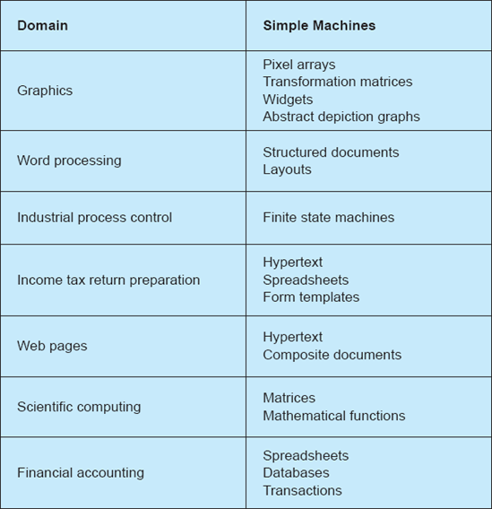
Figura 4-1. Máquinas simples comuns.
Escolha do Nível e dos Termos do Discurso
Quer a abordagem de tentar identificar máquinas simples seja adotada ou não, qualquer tentativa de usar a abstração como ferramenta requer escolha de um campo de discurso, e uma vez escolhido isso, é necessária a seleção dos termos usados no discurso. Frequentemente, as duas opções são praticamente inseparáveis.
A abordagem linear, ou padrão, da formação do conceito arquitetônico exige que o tema inicial do discurso seja o da aplicação como um todo. Por exemplo, a antiga técnica de refinamento passo a passo começa nesse nível.
No entanto, existem duas alternativas. A primeira é escolher trabalhar, inicialmente, em um nível inferior ao de toda a aplicação. Ou seja, o tema do discurso pode ser algo que se assume otimisticamente como parte de uma solução para o problema maior. O projeto é realizado nesse nível na esperança de que, uma vez resolvidos vários desses subproblemas, eles possam ser compostos juntos para formar uma solução geral, onde os meios de composição não afetem sua estrutura interna. O sucesso com essa abordagem não precisa exigir grande previsão; Às vezes, apenas desgastar partes de um problema facilita a resolução posterior do problema geral. Boa previsão certamente ajuda, claro.
A ocasião em que essa abordagem é particularmente apropriada é quando existe um conjunto de componentes pré-existentes disponíveis para reutilização no desenvolvimento de uma nova aplicação. (Note que isso é quase Sempre assim!) Um entendimento aprofundado do que esses componentes são capazes e de como podem ser compostos pode fornecer insights críticos sobre como toda a aplicação deve ser estruturada para possibilitar a reutilização.
A segunda alternativa é escolher trabalhar, inicialmente, em um nível acima do da aplicação desejada. Em alguns casos, isso pode significar resolver um problema mais geral. Isso funcionou bem para lidar com entradas complicadas em programas. Em vez de construir um componente personalizado para processar a linguagem simples e restrita de entrada de um aplicativo, pode ser muito eficaz empregar uma ferramenta genérica de parser. Embora o parser possa acabar sendo muito mais poderoso do que o que a aplicação específica exige, a maturidade do desenvolvimento tecnológico nesse domínio, aliada à abundância de pacotes reutilizáveis incorporando essa tecnologia, provavelmente resultará em um componente menor, mais rápido e pronto para uso próprio.
Em outros casos, isso pode simplesmente significar entender as questões centrais de uma aplicação de forma mais fundamental. Para usar um exemplo físico, construir uma guitarra pode sugerir pensar em escolher cordas, madeira para a escala, lateral, tampo, ponte e assim por diante. No entanto, subir um nível de abstração envolveria pensar na física das cordas vibrantes, propagação de ondas, e assim por diante [veja, por exemplo (Vogel)]. O benefício é identificar antecipadamente quais são os principais fatores de design.
Para usar um exemplo de software, considere o desafio de projetar uma aplicação para ajudar na preparação das declarações de imposto de renda. Para qualquer ano, as leis tributárias do país determinam as informações que devem ser reportadas, os cálculos que devem ser feitos e como essas informações devem ser reportadas em vários formulários. Publicações da autoridade tributária fornecem instruções e explicações. Uma aplicação personalizada poderia, claro, ser projetada para desempenhar essas funções conforme necessário. Mas se o problema for reconsiderado em um nível mais alto e abstrato, ele pode ser formulado como um problema de planilha combinado com um problema de formatação (layout de texto) combinado com hipertexto. A planilha inclui as fórmulas específicas exigidas em um determinado ano. O layout do texto pode ser visualizado de forma igualmente genérica, com regras especificando o layout específico necessário para um ano específico. O hipertexto associa instruções às partes dos formulários às quais as instruções se aplicam. Construído dessa forma (ou seja, usando um motor genérico de planilhas, um motor genérico de layout de formulários e um motor de hipertexto), um aplicativo de software tributário pode ser criado e atualizado de forma eficiente de ano para ano, possibilitando um negócio lucrativo.
Separação de Questões
Separação de preocupações é a subdivisão de um problema em partes independentes. Por exemplo, a interface visual que um cliente vê no caixa eletrônico do banco é independente da lógica usada para controlar a operação das contas desse cliente. Se os conceitos em questão forem genuinamente independentes, então usar essa técnica é simples. As dificuldades surgem quando as questões estão realmente ou aparentemente interligadas.
Quando tais inter-relações são encontradas, suas causas devem ser identificadas. Às vezes, inter-relacionamentos podem estar presentes apenas por causa do uso ou abuso da linguagem. Por exemplo, uma única palavra comum como "conta" pode ser usada para descrever o que são, de fato, diferentes entidades em diferentes partes de uma aplicação. Em outros casos, os conceitos podem estar entrelaçados devido à eficiência da solução (passada ou futura). Por exemplo, a presença de chaves numéricas nos registros de usuário pode simplesmente refletir estratégias prévias de implementação de banco de dados, e não ser informação intrínseca sobre o usuário.
Um exemplo primário de separação de preocupações em ação na arquitetura de software é a separação da estrutura de um sistema em componentes (loci de computação) e conectores (loci de comunicação). Essa separação reflete a independência das questões e está no cerne do capítulo sobre conectores. A miríade de detalhes e preocupações abordados nesse capítulo revela que, como em muitas aplicações do princípio, inúmeras concessões e alternativas devem ser consideradas.
A separação das preocupações frequentemente envolve muitos trade-offs; A independência total dos conceitos pode não ser possível. Assim, o projetista fica com a importante obrigação de avaliar desempenho, custo, aparência ou trade-offs funcionais entre concepções concorrentes.
A Grande Ferramenta: Experiência Refinada
Embora as ferramentas intelectuais de abstração e separação de preocupações sejam de utilidade inegável no processo de projetar uma arquitetura, por si só elas fornecem pouca orientação ao projetista. A experiência pode ser um professor magistral, no entanto, e pode fornecer a orientação necessária para manejar as ferramentas básicas de forma eficaz. A experiência bruta, por si só, não oferece a orientação madura que permite enfrentar de forma eficaz novos problemas. A experiência deve ser refletida e refinada a ponto de o designer compreender as questões essenciais e as lições do trabalho anterior, permitindo uma escolha criteriosa de técnicas adequadas ao contexto.
As lições de trabalhos anteriores incluem não apenas as lições de sucesso, mas também as lições decorrentes do fracasso. Em ambos os casos, é apenas a reflexão que pode indicar as causas raiz do sucesso ou fracasso, e, portanto, o conhecimento crítico que pode ser carregado adiante. (Isso não quer dizer que toda falha tenha sementes de valiosos conselhos técnicos. Infelizmente, muitos projetos fracassam por motivos independentes da tecnologia.) As lições de trabalhos anteriores não precisam vir apenas da própria experiência, é claro. Uma virtude de ler amplamente em uma área técnica ou participar de conferências técnicas é se beneficiar das experiências dos outros. Não há virtude em reinventar rodas, quebradas ou não.
Quando se possui experiência técnica valiosa, entretanto, resultam eficiências substanciais. A experiência pode fornecer aquele conjunto inicial viável de "arranjos alternativos para o projeto como um todo" exigido no início deSeção 4.1. Não é necessário dedicar tempo valioso de design a tópicos para os quais já se tem uma solução validada em mãos. Da mesma forma, a comunicação entre os membros da equipe de desenvolvimento é aprimorada: quando outros têm experiência com sistemas pré-existentes iguais ou similares, é mais fácil descrever o uso ou modificações de uma abordagem já estabelecida, do que transmitir um conceito completamente novo.
Aplicar abordagens já estabelecidas, no entanto, não é uma estratégia totalmente isenta de riscos. Quando se tem um martelo favorito, tudo começa a parecer um prego. Seguir essa estratégia pode resultar em uma aplicação funcional, mas pode facilmente gerar uma que seja seriamente deficiente em algum aspecto ou pelo menos subótima. Não só os benefícios de sistemas anteriores são importados pela reutilização de uma abordagem, mas também as limitações. A inovação certamente é limitada por seguir mecanicamente a abordagem padrão. Dito isso, ainda assim está claro que a experiência refinada é, de fato, a Grande Ferramenta para os designers aplicarem na criação de novas aplicações.
Balas de Prata e Outros Falhas de Disparo
A literatura sobre engenharia de software está repleta de abordagens infalíveis para o design — ferramentas e técnicas que garantem que sempre funcionarão e fornecerão a solução necessária. Algumas dessas abordagens equivocadas de design confundem uma notação ou linguagem com um método de design. UML, por exemplo, é uma notação, não uma abordagem. O mesmo vale para Java. Outras abordagens confundem uma ferramenta ou tecnologia com um método de design. Assim, alguns afirmam que a CORBA fornece toda a orientação necessária para construir sistemas robóticos; Outros nos asseguraram que sistemas especialistas baseados em regras são tudo o que precisamos. Com certeza, não existe poção mágica, e uma abordagem adequada para problemas de design exige cuidado, pensamento, criatividade, disciplina, experiência e método.
O designer de software do século XXI tem uma ampla base de experiência para se basear. A reflexão sobre o desenvolvimento de milhares de sistemas gerou uma grande variedade de abordagens e lições, que vão desde arquiteturas amplas e específicas de domínio até padrões simples de design em nível de linguagem de programação. A seção a seguir apresenta lições importantes dessa base de experiência em detalhes consideráveis.
EXPERIÊNCIA REFINADA EM AÇÃO: ESTILOS E PADRÕES ARQUITETÔNICOS
A sabedoria arquitetônica destilada que surgiu de um vasto corpo de experiências vem em muitas formas e estilos. Como um todo, estamos tratando eles sob o padrão de estilos e padrões. Como introduzido emCapítulo 1, a noção de estilos arquitetônicos é antiga, remontando pelo menos a Vitrúvio. Estilos são projetados para capturar o conhecimento de projetos eficazes para alcançar objetivos específicos dentro de um determinado contexto de aplicação. Para a arquitetura de construção, a combinação de objetivos e contexto pode ser fornecer uma casa para uma única família em um clima mediterrâneo usando pedra e telhas como principais materiais de construção. O estilo correspondente poderia ser uma vila térrea. Para software, os objetivos e o contexto podem ser fornecer um sistema seguro de mensagens instantâneas para operar entre sites remotos de uma empresa global; o estilo apropriado pode ser cliente-servidor.
Padrões e estilos podem ser caracterizados tanto para problemas grandes quanto para pequenos. Novamente, no que diz respeito a edifícios, pode-se caracterizar um padrão para determinar o saliência apropriada de um telhado de telha sobre uma entrada; Da mesma forma, pode-se caracterizar um padrão (muito mais complicado) para a prestação de serviço de elevador em um arranha-céu de noventa andares. Assim é com a arquitetura de software; Padrões e estilos foram desenvolvidos apropriados tanto para aplicações pequenas, grandes quanto complexas.
Não surpreendentemente, as lições de experiência em arquitetura de software surgiram de várias comunidades diferentes de desenvolvimento de software, cada uma com sua própria contribuição. Infelizmente, isso resultou em uma variedade de termos para caracterizar essa experiência, nem todos descrevem conceitos distintos. Como auxílio para desvendar as várias questões e como meio de fornecer estrutura para o restante desta seção, veja a Figura 4-2 para um resumo dos principais tipos de estilos e padrões arquitetônicos.
O eixo horizontal da Figura 4-2 refere-se ao escopo de aplicabilidade do corpo de conhecimento — o domínio do discurso. Por exemplo, padrões de design exemplificados pelos apresentados no livro de Gamma (Gamma et al. 1995) são focados na programação de soluções orientadas a objetos para problemas de design de programas. Tais padrões não se aplicam ao design de sistemas em nível empresarial, que fica na outra extremidade do eixo horizontal.
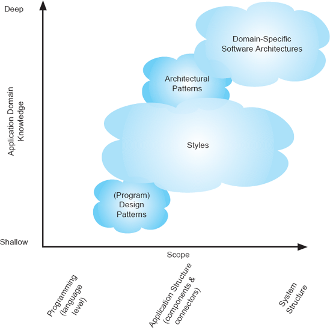
Figura 4-2. Conhecimento do domínio versus escopo ao mostrar a relação entre estilos e padrões. Cuidado! Os limites entre os conceitos não são precisos.
O eixo vertical reflete a quantidade de conhecimento do domínio representada (ou codificada dentro) do corpo de conhecimento. Padrões de design de programas são mostrados na extremidade rasa dessa escala, refletindo que são de aplicação muito geral e não restritos ao uso dentro de um determinado domínio de aplicação. No outro extremo da escala estão as arquiteturas de software específicas de domínio. Tais estilos são aplicáveis ao design de aplicações muito grandes e, simultaneamente, codificam conhecimento substancial sobre o design de aplicações dentro de um domínio. Assim, por exemplo, uma arquitetura de software específica de domínio para o banco de varejo poderia especificar todas as principais partes da aplicação; No entanto, é improvável que tal estrutura seja adequada para qualquer outro tipo de aplicação além do banco de varejo.
No entanto, o diagrama tem limites difusos e deve ser tomado apenas como um guia aproximado. Linguagens de programação existem em muitos níveis de abstração; As aplicações variam de muito simples a extraordinariamente complexas. O eixo do escopo, portanto, não deve ser considerado genuinamente linear ou totalmente ordenado. As nuvens de conceito no diagrama também possuem limites difusos; O que um arquiteto pode chamar de padrão arquitetônico pode ser chamado de estilo por outro. As seções a seguir trarão um pouco mais de precisão para a discussão. Enquanto o tema das arquiteturas específicas de domínio foi introduzido emCapítulo 2e será tratado com bastante detalhe emCapítulo 15, começamos a seguinte exposição com uma breve consideração dessas arquiteturas, pois elas são uma forma poderosa de explorar a experiência na tarefa de desenvolver a arquitetura para um novo sistema. Em seguida, consideramos padrões e estilos arquitetônicos detalhadamente. Esses temas foram introduzidos e definidos nos capítulos anteriores; Aqui, uma grande variedade de exemplos específicos é apresentada. Este capítulo não inclui mais discussões sobre padrões de design de programas. ComoFigura 4-2indica que tais padrões lidam com conceitos no nível das linguagens de programação, e na maioria das vezes apenas para linguagens orientadas a objetos. Assim, oferecem pouca orientação ao arquiteto que busca identificar um conjunto viável de "arranjos alternativos para o projeto como um todo." (Eles, é claro, oferecem orientações significativas a um programador encarregado de implementar uma arquitetura escolhida em uma linguagem orientada a objetos, mas esse não é o tema deste capítulo.)
Arquiteturas de Software Específicas de Domínio
Arquiteturas de software específicas de domínio (DSSAs) codificam conhecimento substancial, adquirido por meio de ampla experiência, sobre como estruturar aplicações completas dentro de um determinado domínio. Uma definição operacional útil de DSSAs é a combinação de (1) umArquitetura de referênciapara um domínio de aplicação (conforme definido emCapítulo 3), (2) uma biblioteca de componentes de software para essa arquitetura contendo blocos reutilizáveis de expertise de domínio, e (3) um método para escolher e configurar componentes para funcionar dentro de uma instância da arquitetura de referência (Hayes-Roth et al. 1995). Assim, um DSSA representa o tipo de experiência mais valioso útil para identificar um conjunto viável de "arranjos alternativos para o projeto como um todo."
Em termos da nossa analogia familiar com a construção, DSSAs são semelhantes ao design genérico de casas de lote, ou seja, projetos de casas instanciados dezenas ou centenas de vezes para gerar casas individuais em um empreendimento residencial. Essas casas não são idênticas entre si; Normalmente, eles variam em termos de armários, estilos de corrimão, cores, carpetes, materiais de telhado e afins. Eles serão os mesmos, porém, em relação à planta, à localização das janelas e a todos os principais elementos estruturais. O empreiteiro de uma casa individual sabe como implementar o plano genérico de acordo com as preferências e escolhas específicas do comprador, para criar uma estrutura muito econômica que, ainda assim, seja um pouco personalizada.
O exemplo estendido de software para eletrônicos de consumo apresentado emCapítulo 1serve como ilustração de um DSSA. (Embora este exemplo tenha sido apresentado ali como uma ilustração de famílias de produtos, os dois conceitos são intimamente relacionados; essa relação é cuidadosamente explorada emCapítulo 15.) Diferentes aplicações de eletrônicos de consumo podem ser criadas por parametrização ou especialização da arquitetura principal. Essas especializações podem representar, por exemplo, a adição de novos componentes sem precedentes à arquitetura de uma televisão, mas quando essas adições são realizadas em partes da arquitetura são identificadas antecipadamente como locais para que tais extensões ocorram.
A dificuldade com os DSSAs, claro, é que eles são especializados para um domínio específico e, portanto, só têm valor se existir um para o domínio em que o engenheiro é responsável por construir uma nova aplicação. Embora isso possa parecer que DSSAs são raros, o contrário é verdade. As empresas tendem a desenvolver múltiplas aplicações dentro de uma área específica de especialização. Essa expertise se manifesta em fortes semelhanças estruturais entre dois produtos da empresa e outro. Essas semelhanças, e a justificativa delas, são a base de um DSSA. O que infelizmente é verdade nessas situações, porém, é que frequentemente a estrutura comum — a DSSA — nunca é escrita, mas permanece latente na mente dos engenheiros da empresa.
DSSAs e famílias de produtos são exploradas emCapítulo 15Em detalhes substanciais, portanto, a discussão futura desses conceitos é adiada. O leitor deve lembrar, no entanto, que as DSSAs são o meio preeminente para a máxima reutilização do conhecimento e do desenvolvimento prévio e, portanto, são fundamentais para desenvolver o design de um novo produto em um domínio estabelecido.
Padrões Arquitetônicos
Padrões arquitetônicos são semelhantes aos DSSAs, mas aplicados em um escopo muito mais restrito. Eles representam uma reutilização significativa da experiência, mas ajudam menos completamente. Repetimos aqui a definição deCapítulo 3:
Definição. Um padrão arquitetônico é uma coleção nomeada de decisões de design arquitetônico aplicáveis a um problema recorrente de projeto, parametrizada para levar em conta diferentes contextos de desenvolvimento de software nos quais esse problema aparece.
Nas seções abaixo, esboçamos três exemplos muito simples: state-logic-display, model-view-controller e sense-compute-control.
State-Logic-Display (também conhecido como Três Níveis)
O exemplo usado emCapítulo 3Para ilustrar essa definição está a arquitetura familiar de três camadas, comumente empregada em aplicações empresariais onde há um armazenamento de dados por trás de um conjunto de regras de lógica de negócios, e essa lógica de negócios é acessada por componentes da interface do usuário. Esse padrão, também conhecido como state-logic-display, tem sido popular por se mapear bem para uma implementação distribuída em que a comunicação entre os componentes é feita por chamada remota de procedimentos.Figura 4-3mostra o padrão, redesenhado em uma orientação diferente daquela usada emCapítulo 3.
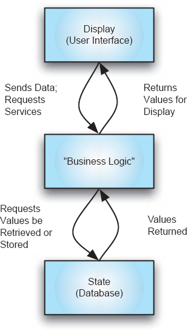
Figura 4-3. Forma canônica de arquiteturas de lógica de estados-exibição.
Em aplicações empresariais, o armazenamento de dados geralmente é um grande servidor de banco de dados; o componente de lógica de negócios pode implementar, por exemplo, algumas regras de transação bancária, e o componente de exibição ser um componente relativamente simples para gerenciar a interação com um usuário em um PC desktop. Jogos multiplayer também se encaixam bem nessa arquitetura, onde o componente de lógica de negócio implementa as regras do jogo e o armazenamento de dados mantém o estado do jogo. Vários jogadores podem jogar simultaneamente, onde cada usuário tem seu próprio componente de exibição. Muitas aplicações baseadas na Web podem ser aproximadamente caracterizadas como arquiteturas de três níveis, onde o componente de exibição é o navegador do usuário, o componente de lógica de negócios é o software do site (servidor Web mais lógica específica da aplicação) e o armazenamento de dados é um banco de dados acessado pelo servidor Web em um host local. Essa caracterização das aplicações Web não é totalmente justa, no entanto, pois a comunicação entre o componente de exibição (navegador) e o componente de lógica de negócios (servidor Web) não é feita por meio de uma chamada remota de procedimento, mas sim pelo protocolo HTTP, que não necessariamente mantém uma conexão entre os dois componentes entre as interações.
Model-View-Controller (para Interfaces Gráficas de Usuário)
Desde sua invenção na década de 1980, o padrão modelo-view-controlador (MVC) tem sido uma influência dominante no design de interfaces gráficas de usuário. Embora o MVC certamente seja aplicado nos níveis baixos do design de programas e, portanto, possa ser classificado na categoria de padrões de design (e, portanto, omitido da nossa discussão aqui), ele também pode ser visto como fornecedor de uma estrutura para aplicações em um nível mais alto.
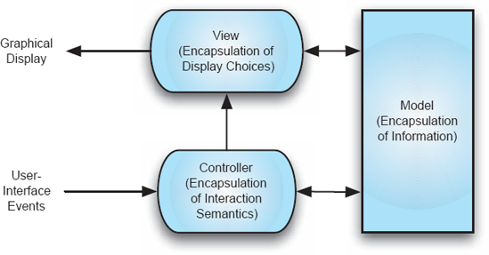
Figura 4-4. Padrão nocional modelo-visualização-controlador.
O objetivo do padrão é promover a separação, e assim caminhos de desenvolvimento independentes, entre informações manipuladas por um programa e representações das interações do usuário com essas informações. A ideia simples é mostrada na Figura 4-4. O componente modelo encapsula as informações usadas pela aplicação; o componente view encapsula a informação escolhida e necessária para a representação gráfica dessa informação; O componente controlador encapsula a lógica necessária para manter a consistência entre o modelo e a visão, e para lidar com as entradas do usuário em relação à representação.
As interações nocionais entre esses componentes são as seguintes (existem variações na prática). Quando a aplicação altera um valor no objeto modelo, a notificação dessa mudança é enviada para a visualização para que quaisquer partes afetadas da representação possam ser atualizadas e redesenhadas. A notificação também normalmente vai para o controlador, para que o controlador possa modificar a visão se sua lógica assim exigir. A visualização pode consultar o modelo para obter dados adicionais necessários para a exibição. Ao lidar com a entrada do usuário (como um clique do mouse em parte da visualização), o sistema de janelas envia o evento do usuário para o controlador; O controlador pode consultar a visualização em busca de informações que ajudem a determinar qual ação tomar. O controlador então atualiza o objeto modelo de acordo com a semântica desejada. Então, claro, se o objeto modelo mudar de valor, ele deve notificar a visualização e o controlador para que a interface do usuário possa ser atualizada, e assim o ciclo de interações continua.
Embora as Figuras 4-4 mostrem três componentes distintos, pela descrição acima de suas interações fica claro que frequentemente há um acoplamento muito próximo entre as ações do componente de visualização e do componente controlador. Em muitos casos, portanto, os componentes de visão e controlador são fundidos; esse é o caso da arquitetura do framework Swing do Java.
Em um nível muito mais alto de abstração do que a programação, o paradigma MVC pode ser visto em ação na World Wide Web. Recursos web correspondem aos objetos modelo; o agente de renderização HTML dentro do navegador corresponde ao visualizador; o controlador, no caso mais simples, corresponde ao código que faz parte do navegador e responde à entrada do usuário e que causa interações com um servidor Web ou modifica a exibição do navegador de alguma forma. Na situação mais complicada, o controlador também englobaria código enviado de um servidor que regula a interação do usuário com a tela, como JavaScript enviado como parte de uma página Web ou código no servidor que determina a representação do recurso a ser transmitido ao navegador.
O MVC tem sido objeto de muito trabalho, e uma variedade de referências está disponível discutindo os detalhes de várias abordagens de implementação diferentes. O MVC também inspirou o desenvolvimento de outros padrões arquitetônicos relacionados, como o controlador de apresentação-abstração (PAC). Citações detalhadas são fornecidas ao final do capítulo.
Sentido-Computação-Controle (também conhecido como Sensor-Controlador-Atuador)
O padrão de sentido-computação-controle (SCC) é tipicamente usado na estruturação de aplicações de controle embarcado. Isso pode variar desde dispositivos simples, como os encontrados em eletrodomésticos de cozinha, até sistemas sofisticados usados em aplicações automotivas ou controle robótico. A ideia básica está ilustrada nas Figuras 4-5. Um computador está embutido em alguma aplicação; Sensores de vários dispositivos são conectados ao computador e podem ser amostrados para determinar seu valor. Também estão conectados ao computador atuadores de hardware. Ao enviar um sinal para esses dispositivos, o computador pode, por exemplo, abrir um valor, diminuir as abas ou desligar uma luz, controlando assim o sistema.
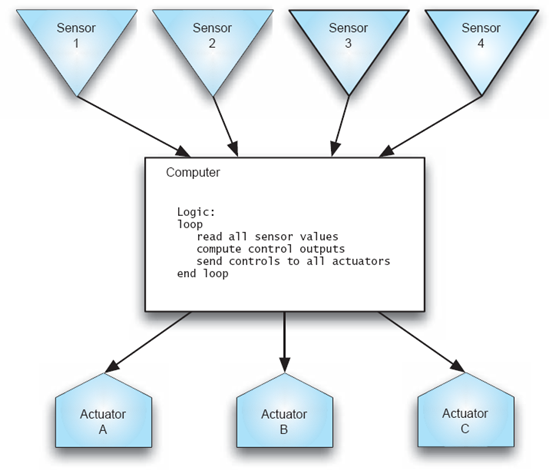
Figura 4-5. Controle de sentido-computação: Caixas de formatos diferentes são usadas para indicar os diferentes tipos de dispositivos presentes no sistema.
O padrão arquitetônico consiste simplesmente em passar pelas etapas de leitura de todos os valores do sensor, execução de um conjunto de leis ou funções de controle e então enviar as saídas para os diversos atuadores. Normalmente, tal ciclo é ligado a um relógio, onde a frequência dos tique-taques pode ser ajustada à taxa máxima em que os valores dos sensores podem mudar ou à sensibilidade dos atuadores a diferentes entradas em suas linhas de controle de entrada. Note que há feedback implícito nessas aplicações por meio do ambiente externo. Ou seja, a situação típica é que, ao trocar um dos atuadores, algo mudará no ambiente externo que um dos sensores acabará detectando, causando uma alteração em seu valor.
Um simples aplicativo de controle de voo pode tornar essas ideias concretas. Usaremos o exemplo de um software controlando um módulo de excursão lunar nocional, ou "módulo lunar lunar", para a superfície da lua, ilustrado na Figura 4-6.
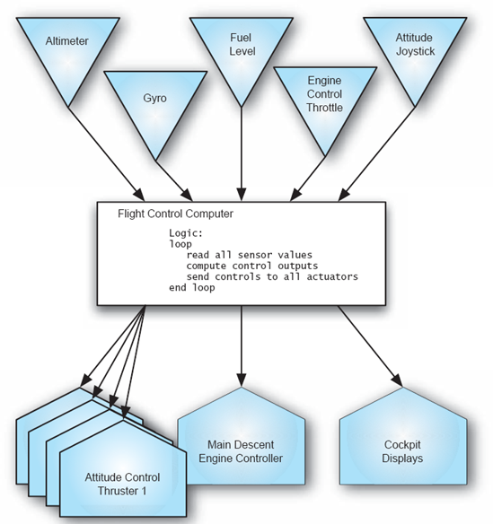
Figuras 4-6. Sentido-computação-controle aplicado a um módulo lunar.
Neste exemplo, há cinco sensores a bordo da espaçonave: o altímetro (presumivelmente o radar) detecta a altitude acima da superfície da lua; O giroscópio fornece informações sobre a orientação dos eixos X-Y-Z da nave; o nível de combustível indica o restante do combustível a bordo; o acelerador de controle do motor indica ao computador a configuração desejada pelo piloto para o empuxo do motor de descida (por exemplo, 75% do acelerador); e o joystick indica os comandos do piloto para orientar a espaçonave. (Lembre-se de que este é um aplicativo totalmente fly-by-wire, então não há conexão física entre o joystick, por exemplo, e quaisquer superfícies de controle. O computador é responsável por detectar todas as entradas dos dispositivos de controle.) O diagrama mostra seis atuadores: quatro propulsores de controle de atitude, o controlador principal do motor de descida e os displays do cockpit.
À medida que a nave se aproxima da superfície, os sensores fornecerão ao computador informações sobre a altitude, atitude, combustível restante do módulo lunar e os comandos de controle do piloto. O computador de controle de voo processará suas leis de controle, calculando valores a serem enviados aos diversos atuadores para controlar o motor de descida, os propulsores de controle de atitude e atualizar os displays do cockpit. A partir das mudanças na altitude, o computador poderia determinar, por exemplo, a taxa de descida e exibi-la ao piloto. Com base no julgamento do piloto, ele ou ela poderia aumentar o acelerador para desacelerar ou diminuir o acelerador e permitir que a gravidade lunar aumentasse a taxa de descida.
Dependendo das escolhas do projetista do sistema, uma variedade de estratégias de controle podia ser programada no computador de controle de voo. O cenário esboçado acima reflete a estratégia aplicada nos pousos Apollo. Uma sequência de pouso totalmente automatizada também poderia ser programada, na qual o software determinaria as configurações ótimas de descida do motor e dos propulsores de controle de atitude, com base na altitude e atitude da aeronave. Do ponto de vista da arquitetura do software, essas diferentes estratégias são todas iguais; A cada ciclo do loop, o software lê os valores atuais dos sensores, calcula as configurações desejadas para os atuadores e envia esses valores para os atuadores.
Introdução aos Estilos
Estilos arquitetônicos são uma forma principal de caracterizar lições derivadas da experiência em design de sistemas de software. Como tal, podem ser um elemento-chave no desenvolvimento de concepções iniciais ou detalhadas da arquitetura de um sistema de software. Como indicam as Figuras 4-2, estilos arquitetônicos são amplamente aplicáveis; eles podem ser úteis para determinar desde a estrutura de sub-rotinas até a estrutura de aplicação de nível superior. Estilos, como usados aqui e vistos em contraste com os padrões arquitetônicos da seção anterior, refletem menos conhecimento do domínio do que padrões arquitetônicos e, portanto, são mais amplamente aplicáveis. No entanto, tenha em mente que os limites entre esses conceitos não são precisos.
O capítulo 3 introduziu estilos arquitetônicos em detalhes e apresentou a seguinte definição:
Definição. Um estilo arquitetônico é um conjunto nomeado de decisões de design arquitetônico que (1) são aplicáveis em um dado contexto de desenvolvimento, (2) restringem decisões de design arquitetônico específicas para um sistema específico dentro desse contexto, e (3) provocam qualidades benéficas em cada sistema resultante.
Assim, a discussão sobre estilos incluirá as decisões e restrições que compõem o estilo, bem como as qualidades benéficas induzidas por essas escolhas.
Estilização com Perry e Wolf
Dewayne Perry e Alexander Wolf escreveram desde cedo e de forma persuasiva sobre a importância dos estilos na arquitetura de software. A influência de seu trabalho — amplamente citado na literatura — motiva a inclusão da seguinte citação extensa.
(Perry e Wolf 1992)
Os estilos arquitetônicos escolhidos para apresentação aqui foram escolhidos com base em refletir uma diversidade de abordagens, uso comum e fazer parte do vocabulário comum dos arquitetos de software. Detalhes suficientes são apresentados para que o leitor possa apreciar a essência de cada estilo e as situações para as quais ele é adequado. Embora este capítulo não apresente um catálogo abrangente de estilos, muitos dos mais populares e conhecidos são discutidos, mostrando ao designer o tipo de papel que os estilos podem desempenhar na resolução de problemas de design. (Capítulo 11exploraremos alguns estilos mais avançados, como REST, em detalhes.)
Existem várias formas potenciais de classificar e organizar estilos. Optamos por apresentar os estilos simples de acordo com o seguinte esboço:
Estilos Tradicionais Influenciados pela Língua
Camadas
Estilos de fluxo de dados
Memória Compartilhada
Intérprete
Invocação Implícita
Peer-to-Peer
Mais adiante no capítulo, dois estilos um pouco mais complexos são discutidos: C2 e objetos distribuídos, com consideração específica ao CORBA.
Outras organizações destacariam outras semelhanças e relacionamentos entre os estilos apresentados. A categorização acima deve, portanto, ser tomada apenas como uma perspectiva grosseira, útil principalmente na introdução inicial dos estilos. Um resumo/comparação de todos os estilos está incluído emTabela 4-1perto do final do capítulo.
A maioria dos estilos apresentados será ilustrada por referência a um tipo de aplicação para a qual o estilo é bem adequado e por esboços de uma versão do jogo do programa lunar lander que foi usado para ilustrar o padrão de sentido-computação-controle (SCC). Ao usar a mesma aplicação, ou uma similar, em cada estilo, alguns contrastes marcantes entre os estilos serão evidentes. A versão do jogo do módulo lunar difere da versão do SCC em um aspecto crítico: o ambiente precisa ser simulado. Em uma aplicação real de controle de voo, as ações do universo físico afetam a espaçonave. Por exemplo, à medida que o módulo de pouso se aproxima da Lua, o campo gravitacional da Lua puxa a espaçonave para baixo. Cada vez que os sensores são lidos, valores diferentes aparecerão, não por qualquer ação do software, mas simplesmente pela ação da gravidade. Na versão do jogo, a física do universo deve ser simulada. Por exemplo, a cada clique do relógio de um jogo, os valores dos sensores poderiam ser calculados por um simulador de ambiente, em vez de serem lidos de dispositivos sensores genuínos. Ao comparar os vários exemplos, por favor, esteja ciente de que os vários jogos de pouso lunar não são equivalentes. O objetivo dos exemplos é ajudar a desenvolver a compreensão dos vários estilos por meio de referência a um contexto de aplicação comum — e não a uma especificação comum, precisa e completa de requisitos.
Alguns dos estilos discutidos têm detalhes complexos associados ao seu uso que foram omitidos aqui. Nosso objetivo principal é ilustrar uma ampla variedade de estilos diversos que representem a captura de uma experiência extensa. O material apresentado aqui pode servir como introdução aos estilos; instruções detalhadas para seu uso devem ser buscadas em outros lugares.
Estilos Simples
Estilos Tradicionais Influenciados pela Língua
Os dois estilos considerados aqui refletem os estilos de programa resultantes do uso tradicional de linguagens de programação como C, C++, Java e Pascal. Essas linguagens, é claro, podem ser usadas para implementar arquiteturas em estilos muito diferentes; Aqui são discutidas arquiteturas que refletem principalmente as relações organizacionais básicas e de controle-fluxo entre os componentes fornecidas por essas linguagens imperativas.
Programa principal e sub-rotinas. O programa principal e o estilo de sub-rotinas devem ser instantaneamente familiares para qualquer pessoa que tenha programado em uma linguagem como C, Fortran, Pascal ou Basic. Os componentes são o programa principal e as várias sub-rotinas (também conhecidas como procedimentos); Os conectores entre os componentes são chamadas de procedimento. Para fins desta discussão, excluímos especificamente programas que usam memória compartilhada (como variáveis globais) como meio de comunicação de fazer parte desse estilo.
Estilo: Programa Principal e Sub-rotinas (sem memória compartilhada)
Resumo: Decomposição baseada na separação das etapas funcionais do processamento.
Componentes: Programa principal e sub-rotinas.
Conectores: Chamadas de função/procedimento.
Elementos de dados: Valores passados para dentro e para fora das sub-rotinas.
Topologia: A organização estática dos componentes é hierárquica; a estrutura completa é um grafo direcionado.
Restrições adicionais impostas: Nenhuma.
Qualidades geradas: Modularidade: Sub-rotinas podem ser substituídas por implementações diferentes desde que a semântica da interface não seja afetada.
Usos típicos: Programas pequenos; fins pedagógicos.
Avisos: Normalmente não escala para grandes aplicações; atenção insuficiente às estruturas de dados. Esforço imprevisível necessário para acomodar novos requisitos.
Relações com linguagens ou ambientes de programação: Linguagens tradicionais de programação imperativa, como BASIC, Pascal ou C.
Uma versão simples do programa do jogo do módulo lunar é mostrada nas Figuras 4-7. Seu design baseia-se na decomposição funcional do processamento em etapas repetidas da interface do usuário (entrada e saída) e em todo o processamento correspondente à simulação do ambiente e das ações da espaçonave. Especificamente, o programa principal exibe saudações e instruções, então entra em um loop no qual chama os três componentes da sub-rotina por sua vez. O primeiro obtém a entrada do piloto para ajustar o acelerador. O segundo componente serve principalmente como simulador ambiental, determinando quanto combustível resta e qual é a altitude e a taxa de descida. A única lei de controle de voo nesse jogo simples é a tradução de uma porcentagem de acelerador especificada pelo piloto em uma configuração volume/segundo de fluxo de combustível (a taxa de queima) para controlar o motor de descida. O terceiro componente exibe o estado atualizado. Neste jogo não há relógio, então um ciclo pelo processamento funcional corresponde a um tique-taque de clock.
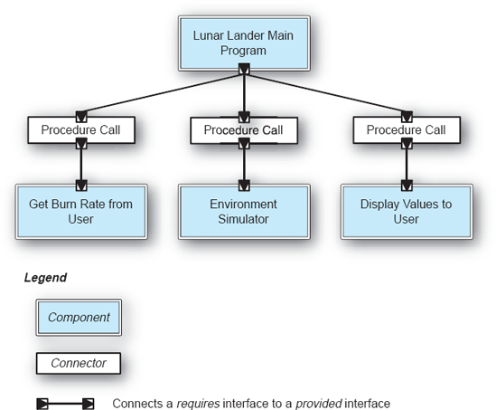
Figuras 4-7. Lunar Lander: Programa principal e sub-rotinas.
Orientado a objetos. O estilo orientado a objetos deve ser igualmente familiar. A única estrutura fornecida é a de um mundo de objetos cujas vidas variam conforme o uso. Compreender um programa estruturado dessa forma requer compreender as inúmeras relações estáticas e dinâmicas entre os objetos.
Estilo: Orientado a Objetos
Resumo: Estado fortemente encapsulado com funções que operam nesse estado como objetos. Os objetos devem ser instanciados antes que os métodos desses objetos possam ser chamados.
Componentes: Objetos (também conhecido como instância de uma classe).
Conector: Invocação de método (chamadas de procedimento para manipular o estado).
Elementos de dados: Argumentos para métodos.
Topologia: Pode variar arbitrariamente; os componentes podem compartilhar dados e funções de interface por meio de hierarquias de herança.
Restrições adicionais impostas: Comumente: memória compartilhada (para suportar o uso de ponteiros), single-threaded.
Qualidades geradas: Integridade das operações de dados: dados manipulados apenas por funções apropriadas. Abstração: detalhes de implementação ocultos.
Usos típicos: Aplicações em que o projetista deseja uma correlação próxima entre entidades do mundo físico e entidades do programa; pedagogia; aplicações envolvendo estruturas de dados complexas e dinâmicas.
Avisos: O uso em aplicações distribuídas requer middleware extenso para fornecer acesso a objetos remotos. Relativamente ineficiente para aplicações de alto desempenho com grandes estruturas numéricas regulares, como na computação científica. A falta de princípios estruturais adicionais pode resultar em aplicações altamente complexas.
Relações com linguagens de programação ou ambientes: Java, C++.
O design orientado a objetos do jogo do módulo lunar mostrado na Figura 4-8 possui três encapsulamentos: a espaçonave, a interface do usuário e o ambiente (essencialmente um modelo físico que permite calcular a taxa de descida). Note um contraste com o design do programa principal e da sub-rotina (MPS): as interações aqui com o usuário são tratadas por um único objeto, que executa as funções de entrada e saída. A decomposição funcional do projeto MPS resultou em essas funções sendo realizadas por sub-rotinas separadas. Alguns detalhes do design orientado a objetos são evidentes na Figura 4-9, que é uma caracterização dos objetos pela Linguagem Unificada de Modelagem.
Camadas
Estilos em camadas são tão simples e familiares quanto os acima, que refletem o uso tradicional de linguagens de programação como C ou Java. A essência de um estilo em camadas é que uma arquitetura é separada em camadas ordenadas, nas quais um programa dentro de uma camada pode obter serviços de uma camada abaixo dele. O estilo de máquinas virtuais é familiar para qualquer pessoa que tenha estudado arquiteturas de computadores e sistemas operacionais; O estilo em camadas cliente-servidor é onipresente em aplicações empresariais. Ambos são discutidos abaixo.
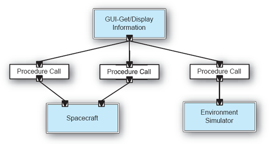
Figuras 4-8. Lunar Lander no estilo orientado a objetos.
Máquinas Virtuais. No estilo das máquinas virtuais, uma camada oferece um conjunto de serviços ("uma máquina com vários botões e botões") que pode ser acessado, pelo menos, por programas que residem na camada acima dela. Os serviços que uma camada oferece podem ser chamados de "interface de fornecimento" da camada. Os serviços podem ser implementados por vários programas dentro da camada, mas, ao projetar uma arquitetura, do ponto de vista das entidades que utilizam os serviços da camada, tais distinções não são aparentes. Na Figura 4-10, por exemplo, o programa A na camada 1 pode acessar os serviços fornecidos pela camada 2; esses serviços podem, de fato, ser implementados pelos programas B e C, mas tais detalhes não são de interesse para o programa A.
Em um estilo estrito de máquinas virtuais, programas em um determinado nível só podem acessar os serviços fornecidos pela camada imediatamente abaixo deles. Assim, novamente referindo-se à Figura 4-10, o programa A só pode acessar serviços fornecidos pela camada 2, e não pela camada 3. Um estilo não estrito de máquinas virtuais permitiria que A acessasse os serviços da camada 3 também.
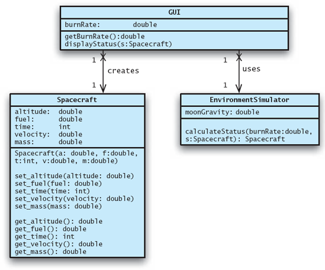
Figuras 4-9. Representação UML das classes usadas na Figura 4-8.
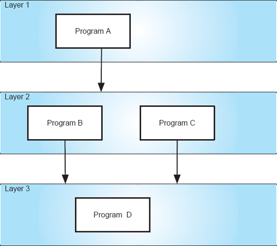
Figuras 4-10. Arquitetura de máquinas virtuais notionais.
Os designs de sistemas operacionais fornecem o uso mais comum do estilo em camadas. Por exemplo, aplicações de usuário residiriam na camada 1, serviços de manipulação de diretórios e arquivos no nível 2, e drivers de disco e softwares de gerenciamento de volumes no nível 3. Protocolos de rede também são frequentemente implementados em um estilo em camadas.
Estilo: Máquinas Virtuais
Resumo: Consiste em uma sequência ordenada de camadas; cada camada, ou máquina virtual, oferece um conjunto de serviços que podem ser acessados por programas (subcomponentes) que residem na camada acima dela.
Componentes: Camadas que oferecem um conjunto de serviços para outras camadas, tipicamente compostas por vários programas (subcomponentes).
Conectores: Normalmente chamadas de procedimento.
Elementos de dados: Parâmetros passados entre camadas.
Topologia: Linear, para máquinas virtuais estritamente; um grafo acíclico direcionado em interpretações mais soltas.
Restrições adicionais impostas: Nenhuma.
Qualidades geradas: Estrutura clara de dependência; software em níveis superiores imune a mudanças de implementação dentro dos níveis inferiores, desde que as especificações de serviço sejam invariantes. Software em níveis inferiores, totalmente independente dos níveis superiores.
Usos típicos: design de sistemas operacionais; pilhas de protocolos de rede.
Avisos: Máquinas virtuais estritas com muitos níveis podem ser relativamente ineficientes.
Uma versão em cinco níveis do jogo do módulo lunar é mostrada na Figura 4-11. A camada superior gerencia as entradas recebidas do usuário através do teclado; ele chama a segunda camada para atender essas entradas. A segunda camada inclui todos os detalhes do módulo lunar que se referem à lógica do jogo e ao simulador de ambiente. Ele chama a terceira camada para iniciar o processo de exibir o estado atualizado do módulo de aterragem ao usuário. A terceira camada é um motor de jogo genérico e bidimensional. Essa camada é capaz de suportar qualquer um de uma grande variedade de jogos que só exigem gráficos bidimensionais. A quarta camada é o sistema operacional, que oferece, entre outras coisas, suporte à interface do usuário (UI) específica da plataforma, como gerenciamento de janelas. A camada inferior é fornecida por firmware ou hardware, e controla a interface física do usuário. Cada camada é independente das camadas acima dela e requer apenas acesso aos serviços da camada imediatamente abaixo. Note que o foco dessa arquitetura é diferente dos exemplos anteriores. A inclusão explícita aqui de uma engine de jogo, do sistema operacional e do hardware tem como objetivo ajudar a ilustrar o estilo em camadas.
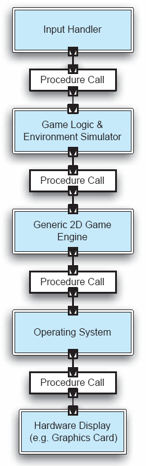
Figuras 4-11. Lunar Lander no estilo das máquinas virtuais.
Cliente-Servidor. O estilo cliente-servidor pode ser simplesmente entendido como uma máquina virtual de duas camadas com conexões de rede. Ou seja, o servidor é a máquina virtual abaixo dos clientes, cada um dos quais acessa as interfaces da máquina virtual por meio de chamadas de procedimento remoto ou métodos equivalentes de acesso à rede. Normalmente, há múltiplos clientes que acessam o mesmo servidor; Os clientes são mutuamente independentes. A obrigação do servidor é fornecer os serviços específicos solicitados por cada cliente. Clientes às vezes são chamados de "finos" ou "grossos", refletindo se incluem algum processamento significativo além das funções da interface do usuário.
Simplificando bastante, o sistema de caixa eletrônico (ATM) de um banco é uma aplicação cliente-servidor. Os clientes são os caixas eletrônicos e o servidor é o banco, que acompanha todas as contas e controla todas as transações solicitadas pelos usuários nos caixas eletrônicos.
Estilo: Cliente-Servidor
Resumo: Os clientes enviam solicitações de serviço ao servidor, que executa as funções necessárias e responde conforme necessário com as informações solicitadas. A comunicação é iniciada pelos clientes.
Componentes: Clientes e servidor.
Conectores: chamada remota de procedimento, protocolos de rede.
Elementos de dados: Parâmetros e valores de retorno enviados pelos conectores.
Topologia: Dois níveis, com múltiplos clientes fazendo requisições ao servidor.
Restrições adicionais impostas: Comunicação cliente a cliente proibida.
Qualidades geradas: centralização da computação e dos dados no servidor, com as informações disponibilizadas para clientes remotos. Um único servidor poderoso pode atender a muitos clientes.
Usos típicos: Aplicações onde é necessária centralização de dados, ou onde processamento e armazenamento de dados se beneficiam de uma máquina de alta capacidade, e onde os clientes realizam principalmente tarefas simples de interface do usuário, como muitas aplicações empresariais.
Avisos: Quando a largura de banda da rede é limitada e há um grande número de solicitações de clientes.
Uma versão multiplayer do jogo do módulo lunar é mostrada emFiguras 4-12. No sistema mostrado, três jogadores jogam o jogo simultaneamente e de forma independente. Todo o estado do jogo, lógica do jogo e simulação de ambiente são realizados no servidor. Os clientes realizam as funções da interface do usuário. Os conectores neste exemplo são chamadas de procedimento remoto, que são conectores de chamadas de procedimento combinados com um distribuidor. Um distribuidor identifica caminhos de interação de rede e, subsequentemente, roteia a comunicação por esses caminhos. (As complexidades dos tipos de conectores e suas subestruturas serão explicadas em detalhes emCapítulo 5.)
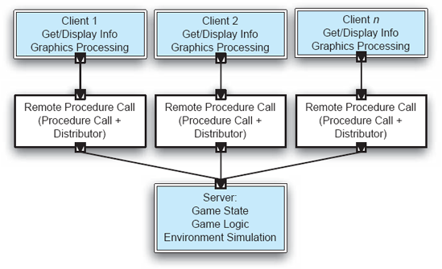
Figuras 4-12. Uma versão multiplayer de Lunar Lander, no estilo cliente-servidor.
Estilos de fluxo de dados
Os dois estilos apresentados aqui podem ser caracterizados como estilos de fluxo de dados. Sua essência diz respeito ao movimento de dados entre elementos de processamento independentes.
Em sequência em lote. O estilo sequencial em lote é um dos mais antigos no design de sistemas computacionais. Ela surgiu nos primeiros dias do processamento de dados, quando as limitações dos equipamentos de computação exigiam que grandes problemas fossem subdivididos em componentes separáveis que pudessem se comunicar por transferência de fitas magnéticas.
Um exemplo clássico desse estilo é mostrado na Figura 4-13. A aplicação consiste em atualizar o registro de todas as suas contas pelo banco, com base no processamento noturno das transações do dia (como depósitos ou saques de uma conta). O processo começa com uma fita master que contém todas as contas do banco, ordenadas por número de conta, e uma fita diária com as transações do dia.
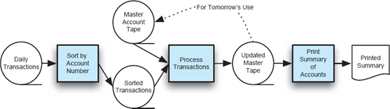
Figuras 4-13. Registros financeiros processados em modo lote-sequencial.
Estilo: Sequencial-Lote.
Resumo: Programas separados são executados em ordem; os dados são passados como agregados de um programa para o outro.
Componentes: Programas independentes.
Conectores: A mão humana carregando fitas entre os programas, também conhecida como "sneaker-net".[5]
Elementos de dados: Elementos explícitos e agregados passados de um componente para o outro após a conclusão da execução do programa produtor.
Topologia: Linear.
Restrições adicionais impostas: Um programa roda por vez, até a conclusão.
Qualidades geradas: execução separável; simplicidade.
Usos típicos: Processamento de transações em sistemas financeiros.
Avisos: Quando é necessária interação entre os componentes; quando a concorrência entre componentes é possível ou necessária.
Relações com linguagens ou ambientes de programação: Nenhuma.
Tentar construir um jogo de módulo lunar no estilo sequencial em lote revela o quanto o estilo é diferente do aplicativo. O contorno desse tipo de design (bizarro) é apresentado na Figura 4-14. Aqui, o estado do jogo é mantido em fitas magnéticas.
Cada etapa funcional de processamento do jogo é realizada por um programa separado. Ao executar a função do passo, o programa produz uma versão atualizada do estado do jogo, que é então transferida para o próximo programa no processo. Após a etapa final de exibição do estado do jogo, a fita produzida é levada de volta ao primeiro programa para outra passagem. Obviamente, este não é um jogo altamente interativo em tempo real!
Tubo e Filtro. Embora radicalmente diferente em detalhes do sequencial-lote, o estilo pipe-and-filter introduzido emCapítulo 1também é um estilo de fluxo de dados. Lembre-se de que a essência do estilo é que fluxos de dados de caracteres são passados de um programa de filtro para outro. Os filtros podem operar simultaneamente, sem necessidade de que um componente produtor termine antes que um componente que consome a produção do produtor comece.Capítulo 1incluiu uma aplicação natural do estilo pipe-and-filter ao problema de produzir uma lista ordenada de nomes de arquivos selecionados.
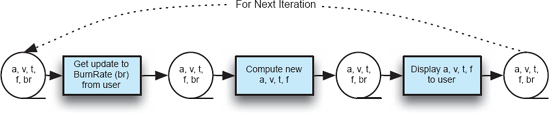
Figuras 4-14. Módulo de Aterragem Lunar: Sequencial-lote.
Estilo: Tubo e filtro uniforme.
Resumo: Programas separados são executados, potencialmente simultaneamente; os dados são passados como um fluxo de um programa para o outro.
Componentes: Programas independentes, conhecidos como filtros.
Conectores: roteadores explícitos de fluxos de dados; serviço fornecido pelo sistema operacional.
Elementos de dados: Não explícitos; devem ser fluxos de dados (lineares). Na implementação típica Unix/Linux/DOS, os fluxos devem ser texto.
Topologia: Pipeline, embora conexões em T sejam possíveis.
Qualidades obtidas: Filtros são mutuamente independentes. A estrutura simples dos fluxos de dados recebidos e enviados facilita combinações inovadoras de filtros para novas aplicações compostas.
Usos típicos: Onipresente na programação de aplicações de sistemas operacionais.
Avisos: Quando estruturas de dados complexas precisam ser trocadas entre filtros; quando é necessária interatividade entre os programas.
Relações com linguagens de programação ou ambientes: Prevalentes em shells Unix.
Um design para o jogo do módulo lunar no estilo de tubo e filtro aparece emFigura 4-15. Faça o Burn Rate rodar em loop sozinho, sempre sondando o usuário por um valor. Quando um valor é gerado, ele é enviado pelo conector do fluxo para o segundo filtro. O segundo filtro também roda em loop sozinho, atualizando o tempo conforme escolhe. Ela serve como simulador ambiental e calcula a taxa de descida da espaçonave. O terceiro filtro também faz loop, atualizando a tela sempre que novos valores ficam disponíveis em sua porta de entrada. Esse design decorre de uma compreensão bastante funcional do jogo, semelhante ao design principal do programa e das sub-rotinas. O funcionamento de um conector de fluxo, e do tubo e filtro em geral, é explorado com muito mais profundidade emCapítulo 5.
Estado Compartilhado
A essência dos estilos de estado compartilhado (às vezes chamados coloquialmente de estilos de "memória compartilhada") é que múltiplos componentes têm acesso ao mesmo repositório de dados e se comunicam por meio desse estoque. Isso corresponde aproximadamente à prática pouco recomendada de usar dados globais em programação em C ou Pascal. A diferença é que, com estilos de estado compartilhado, o centro da atenção do design está explicitamente nesses repositórios estruturados e compartilhados, e que, consequentemente, eles são bem ordenados e cuidadosamente gerenciados. O uso de dados globais na programação geralmente é apenas um dos vários meios de comunicação entre subprogramas, e é feito como uma conveniência.
Figuras 4-15. Lunar Lander no estilo tubo e filtro.
Quadro-negro. O estilo blackboard surgiu em aplicações de inteligência artificial. O sentido intuitivo do estilo é o de muitos especialistas diversos sentados ao redor de um quadro-negro, todos tentando cooperar na solução de um problema grande e complexo. Como qualquer especialista reconhece alguma parte do problema no quadro que se sente capaz de resolver, ele pega esse subproblema, vai trabalhar nele e, quando termina, retorna e posta a solução no quadro. Postar essa solução pode permitir que outro especialista identifique um problema que ele possa resolver, e assim o processo continua até que todo o problema seja resolvido. Assim, o estado das informações no quadro negro determina a ordem de execução dos vários programas "especialistas".
Estilo: Blackboard
Resumo: Programas independentes acessam e se comunicam exclusivamente por meio de um repositório global de dados, conhecido como blackboard.
Componentes: Programas independentes, às vezes chamados de "fontes de conhecimento", blackboard.
Conectores: O acesso ao quadro pode ser feito por referência direta de memória, ou pode ser por meio de uma chamada de procedimento ou consulta ao banco de dados.
Elementos de dados: Dados armazenados no quadro-negro.
Topologia: Topologia estrela, com o quadro-negro no centro.
Variantes: Em uma versão do estilo, programas sondam o quadro negro para determinar se algum valor de interesse mudou; em outra versão, um gerenciador de quadro notifica os componentes interessados sobre uma atualização do quadro-negro.
Qualidades geradas: Estratégias completas de solução para problemas complexos não precisam ser pré-planejadas. Visões em evolução dos dados/problemas determinam as estratégias que são adotadas.
Usos típicos: Resolução heurística de problemas em aplicações de inteligência artificial.
Avisos: Quando uma estratégia de solução bem estruturada está disponível; quando interações entre os programas independentes exigem regulação complexa; quando a representação dos dados no quadro negro está sujeita a mudanças frequentes (exigindo propagação de alterações em todos os componentes participantes).
Relações com linguagens de programação ou ambientes: Versões do estilo blackboard que permitem concorrência entre os programas constituintes exigem primitivas de concorrência para gerenciar o blackboard compartilhado.
A Figura 4-16 mostra o programa do módulo lunar resolvido em estilo quadro-negro. Aqui, um único conector regula o acesso dos vários especialistas na manipulação das informações no quadro-negro. O quadro negro mantém o estado do jogo; Os especialistas realizam tarefas independentes de (1) atualizar a taxa de queima do motor de descida com base na entrada do usuário, (2) mostrar ao usuário o estado atual da espaçonave e qualquer outro aspecto do estado do jogo, e (3) atualizar o estado do jogo com base em um modelo de tempo e física. Ou seja, o terceiro componente determina a rapidez com que o tempo passa e atualiza o estado do jogo de acordo com a passagem do tempo e o modelo físico da lua e do módulo de pouso.
Sistema baseado em regras/especialista. Uma arquitetura baseada em regras é um tipo altamente especializado de arquitetura de memória compartilhada. A memória compartilhada é uma chamada base de conhecimento, ou seja, um banco de dados que contém fatos (declarações de valores de variáveis) e regras de produção que consistem em "se ... então" sobre o conjunto de variáveis. Um componente de interface de usuário oferece dois modos: um para inserir fatos e regras de produção e outro para inserir consultas, conhecidos como objetivos. Operando na base de conhecimento, em resposta às entradas do usuário, há um motor de inferência. Fatos e regras de produção são adicionados à base de conhecimento; Os objetivos são comparados com fatos existentes no banco de dados. Se uma correspondência exata for encontrada, ela retorna à interface do usuário. Caso contrário, ele avalia as regras conforme necessário para determinar a validade do objetivo.
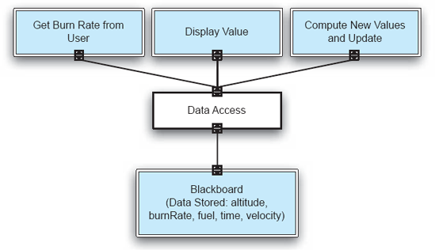
Figuras 4-16. Lunar Lander no estilo quadro negro.
Estilo: Sistema Baseado em Regras/Especialista
Resumo: O motor de inferência analisa a entrada do usuário e determina se é um fato/regra ou uma consulta. Se for um fato/regra, ele adiciona essa entrada à base de conhecimento. Caso contrário, ele consulta a base de conhecimento para as regras aplicáveis e tenta resolver a consulta.
Componentes: Interface do usuário, motor de inferência, base de conhecimento.
Conectores: Os componentes são fortemente interconectados, com chamadas diretas de procedimentos e/ou acesso compartilhado de dados.
Elementos de dados: Fatos e dúvidas.
Topologia: Três níveis fortemente acoplados (conexão direta da interface do usuário, motor de inferência e base de conhecimento).
Qualidades geradas: O comportamento da aplicação pode ser facilmente modificado por meio da adição ou exclusão dinâmica de regras da base de conhecimento. Sistemas pequenos podem ser prototipados rapidamente. Assim, útil para explorar iterativamente problemas cuja abordagem geral de solução é incerta.
Usos típicos: Quando o problema pode ser entendido como uma questão de resolver repetidamente um conjunto de predicados.
Avisos: Quando há um grande número de regras envolvidas, entender as interações entre múltiplas regras afetadas pelos mesmos fatos pode se tornar muito difícil. Compreender a base lógica para um resultado computado pode ser tão importante quanto o próprio resultado.
Relações com linguagens de programação ou ambientes: Prolog é uma linguagem comum para construir sistemas baseados em regras.
Projetar uma solução para o problema do módulo lunar no estilo baseado em regras exige pensar no problema como uma questão de manter um conjunto consistente de fatos sobre a espaçonave. Isso é bastante natural, pois o modelo físico que determina o estado da espaçonave pode ser compreendido dessa forma. Por exemplo, a passagem de um segundo de tempo exige que os fatos sobre a quantidade de combustível restante, a velocidade da espaçonave e a altura da espaçonave sejam atualizados de forma consistente.
Com relação ao modelo de interação do usuário, na solução de exemplo mostrada na Figura 4-17, o usuário insere o valor da taxa de queima como um fato:
Taxa de queimação (25)
Para ver o status da espaçonave, o usuário pode alternar para o modo objetivo e perguntar se a espaçonave pousou com segurança:
pousados (espaçonave)
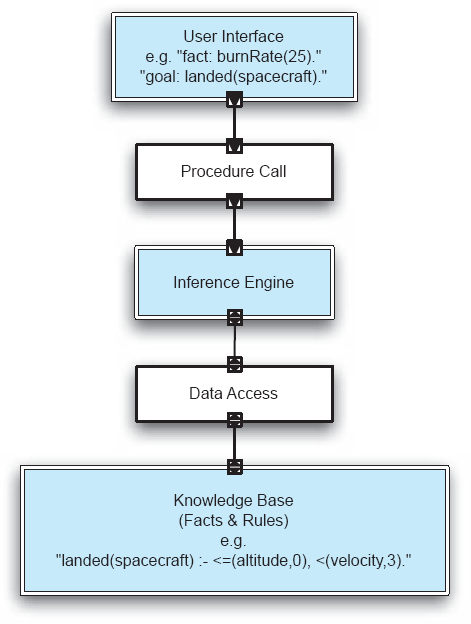
Figura 4-17. Lunar Lander em um estilo baseado em regras.
Para lidar com essa consulta, o motor de inferência consulta o banco de dados. Se os fatos existentes e outras regras de produção satisfizerem as condições "altitude< =0" e "velocidade< 3 pés/s", então o motor retorna fiel à interface do usuário. Caso contrário, retorna falso.[6]
Intérprete
A característica distintiva dos estilos de intérprete é a interpretação dinâmica e em tempo real dos comandos. Comandos são declarações explícitas, possivelmente criadas momentos antes de serem executadas, possivelmente codificadas em texto legível e editável por humanos. Os comandos são formulados em termos de comandos primitivos predefinidos. A interpretação prossegue começando com um estado de execução inicial, obtendo o primeiro comando a executar (possivelmente lendo alguma entrada do usuário), executando o comando sobre o estado de execução atual, modificando esse estado, e então seguindo para executar o próximo comando. A identificação do próximo comando pode ser afetada pelo resultado da execução do comando anterior; de fato, no caso geral, o próximo comando pode ser produto da execução do comando anterior.
O estilo arquitetônico básico do interpretador envolve a execução de comandos um de cada vez. De forma semelhante, embora tipicamente com uma granularidade maior, o estilo de código móvel envolve a execução de um bloco de código por vez. A diferença com o código móvel é que o local onde os comandos são executados pode variar ao longo do tempo.
Intérprete básico. A execução de comandos no estilo básico de interpretador é semelhante ao estilo baseado em regras descrito acima, onde o motor de inferência analisa uma entrada de comando e realiza resolução variável com base no repositório de conhecimento. No caso do estilo de interpretador básico, o interpretador de comandos é mais geral (capaz de realizar operações mais genéricas do que realizar inferências sobre um conjunto de regras). A interpretação de um único comando pode envolver inúmeras operações primitivas. O repositório de conhecimento é igualmente mais geral, já que estruturas de dados arbitrárias podem estar envolvidas.
Embora possa parecer complicado, o estilo de intérprete é bastante familiar para o que pode ser o maior grupo de programadores do mundo: os usuários do Microsoft Excel. As fórmulas do Excel são, na verdade, comandos interpretados pelo motor de execução do Excel — o interpretador. Da mesma forma, as macros do Excel são interpretadas pelo interpretador Visual Basic. Muitos programas de edição gráfica são igualmente baseados em intérpretes: uma estrutura de comandos que descreve o desenho é mantida pelo programa de desenho. O desenho na tela visto pelo usuário é criado por um interpretador interno que roda sobre o texto, interpretando-o e emitindo comandos de desenho para o motor gráfico.
Estilo: Intérprete
Resumo: O interpretador analisa e executa comandos de entrada, atualizando o estado mantido pelo interprete.
Componentes: Interpretador de comando, estado do programa/interpretador, interface do usuário.
Conectores: Normalmente, o interpretador de comandos, a interface do usuário e o estado estão muito intimamente ligados a chamadas diretas de procedimento e estado compartilhado.
Elementos de dados: Comandos.
Topologia: Três níveis fortemente acoplados; o estado pode ser separado do interpretador.
Qualidades geradas: Comportamento altamente dinâmico possível, onde o conjunto de comandos é modificado dinamicamente. A arquitetura do sistema pode permanecer constante enquanto novas capacidades são criadas com base em primitivas existentes.
Usos típicos: Excelente para programabilidade do usuário final; suporta um conjunto de capacidades que mudam dinamicamente.
Avisos: Quando é necessário processamento rápido (leva mais tempo para executar código interpretado do que código executável); o gerenciamento de memória pode ser um problema, especialmente quando múltiplos interpretadores são invocados simultaneamente.
Relações com linguagens de programação ou ambientes: Lisp e Scheme são linguagens interpretativas, e às vezes usadas ao construir outros intérpretes; Macros do Word/Excel.
Na versão do jogo do módulo lunar mostrada na Figura 4-18, para cada comando inserido, o motor interpretador processa o código e atualiza o estado do interpretador conforme necessário. Os comandos, neste caso, são diretrizes específicas sobre como a espaçonave deve ser manipulada — mais importante, como o motor de descida deve ser reduzido. Assim, o intérprete foi programado especificamente para interpretar tais comandos. Ele pode devolver valores ao usuário, dependendo do comando. Assim, quando o usuário digita "BurnRate(50)", o interpretador assume BurnRate como comando e o parâmetro como a quantidade de combustível a ser queimada. Em seguida, calcula as atualizações necessárias na altitude, nível de combustível e velocidade. O tempo é simulado incrementando t a cada ocasião em que o usuário insere um comando BurnRate. Quando o usuário insere o comando CheckStatus, recebe o estado atual de altitude, combustível, tempo e velocidade.
Código móvel. Como o nome sugere, estilos de código móvel permitem que o código seja transmitido para um host remoto para interpretação. Isso pode ser devido à falta de poder computacional local, falta de recursos ou devido a grandes conjuntos de dados localizados remotamente. O código móvel pode ser classificado como código sob demanda, avaliação remota ou agente móvel, dependendo de onde o código está sendo transmitido, quem solicitou a transmissão e onde reside o estado do programa. Código sob demanda ocorre quando o iniciador possui recursos e estado, mas baixa código de outro site para ser executado localmente. Avaliação remota ocorre quando o iniciador possui o código, mas não possui recursos (como o interpretador) para executar o código. Assim, ele transmite código para ser processado em um host remoto, como na computação em grade. Os resultados são devolvidos ao iniciador. Agente móvel é quando o iniciador tem o código e o estado, mas alguns recursos estão localizados em outros lugares. Assim, o iniciador se move para um host remoto com o código, o estado e alguns dos recursos. O processamento não precisa retornar ao iniciador.
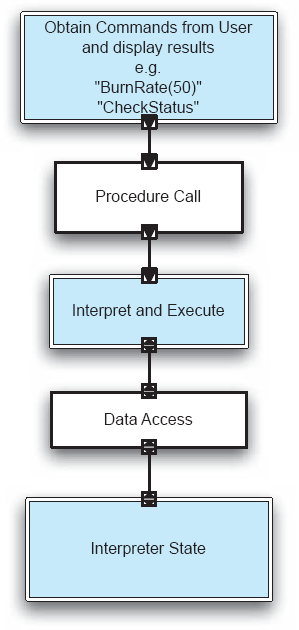
Figura 4-18. Lunar Lander no estilo intérprete.
Em todos os estilos de código mobile, um elemento de dados (alguma representação de um programa) é transformado dinamicamente em um componente de processamento de dados (quando esses comandos são interpretados ou executados de outra forma).
Estilo: Código Móvel
Resumo: O código se move para ser interpretado em outro host; dependendo da variante, o estado também se move.
Componentes: Dock de execução, que cuida do recebimento e implantação do código e do estado; compilador/interpretador de código.
Conectores: Protocolos de rede e elementos para empacotamento de código e dados para transmissão.
Elementos de dados: Representações do código como dados; estado do programa; dados.
Topologia: Rede.
Variantes: Code-on-demand, avaliação remota e agente móvel.
Qualidades geradas: Adaptabilidade dinâmica. Aproveita o poder computacional agregado dos hosts disponíveis; maior confiabilidade por meio da migração para novos hospedeiros.
Usos típicos: Ao processar grandes conjuntos de dados em locais distribuídos, torna-se mais eficiente fazer com que o código se mova para a localização desses grandes conjuntos de dados; quando é desejável personalizar dinamicamente um nó de processamento local por meio da inclusão de código externo.
Avisos: Questões de segurança — a execução de código importado pode expor a máquina hospedeira a malware. Outros avisos — quando é necessário controlar rigidamente as diferentes versões de software implantadas; quando os custos de transmissão excedem o custo de computação; quando as conexões de rede são pouco confiáveis.
Relações com linguagens de programação ou ambientes: Linguagens de script (como JavaScript, VBScript), controles ActiveX. Computação em grade.
Na Figura 4-19, um navegador cliente baixa código sob demanda na forma de um applet de jogo Lunar Lander via HTTP. Um segundo navegador carrega um módulo lunar em JavaScript; um terceiro usa alguma outra forma que não é detalhada. Assim, toda a lógica do jogo se move para as máquinas clientes, liberando os recursos computacionais do servidor. Na figura mostrada, cada máquina cliente mantém o estado do jogo independentemente dos outros clientes.
Invocação Implícita
Diferente dos estilos discutidos anteriormente, os dois estilos abaixo são caracterizados por chamadas que são invocadas indiretamente e implicitamente como resposta a uma notificação ou evento. Facilidade de adaptação e escalabilidade aprimorada são benefícios da interação indireta entre componentes muito pouco acoplados.
Publicar-Assinar. Publicar-assinar recebe seu nome da relação análoga entre editoras de revistas ou jornais e seus assinantes. O editor periodicamente cria informações e o assinante obtém uma cópia das informações ou pelo menos é informado sobre sua disponibilidade. O estilo arquitetônico reflete esse tipo de relação. Existem várias variantes, que diferem na distância entre o editor e os assinantes, e na forma como a relação é gerenciada.
Em um estilo simples de publicação-assinatura, o editor mantém uma lista de assinantes, para cada um dos quais uma chamada de procedimento é emitida quando novas informações estão disponíveis. Assinantes registram seu interesse junto às editoras, fornecendo a eles a interface de procedimento a ser usada (o call-back) quando a informação é publicada. Assinantes também podem cancelar seus interesses, tendo o call-back removido da lista de assinaturas do editor.
O estilo simples de publicar-assinar funciona bem no contexto de um programa simples. Para aplicações em rede em grande escala, é necessário um conjunto de serviços mais sofisticado. As editoras precisam divulgar a existência de recursos de informação aos quais outros possam se inscrever, seja na inicialização do sistema, periodicamente ou sob demanda. As assinaturas não podem mais assumir a forma de procedimentos de retorno de chamada, mas envolvem o uso de protocolos de rede. Preocupações com a eficiência argumentam contra as relações ponto a ponto entre editoras e assinantes; Proxies intermediários ou caches podem ajudar no desempenho — assim como nos jornais físicos, onde um transportador de papel serve como representante da empresa do jornal, sendo responsável pela entrega dos jornais dentro de uma pequena região geográfica.
O estilo publicar-assinar atende a aplicações onde há uma clara delimitação entre produtores e consumidores de informação. Um aplicativo familiar baseado em rede do estilo publicar-assinar é um serviço online de anúncios de vaga. Os gerentes de contratação publicam ou publicam as vagas. Enquanto isso, os candidatos a emprego assinam o serviço online para receber notificações de novas vagas de emprego. Embora este aplicativo funcione com talvez apenas algumas notificações por dia, outros aplicativos de publicação-assinatura em rede operam com muitas notificações por segundo.
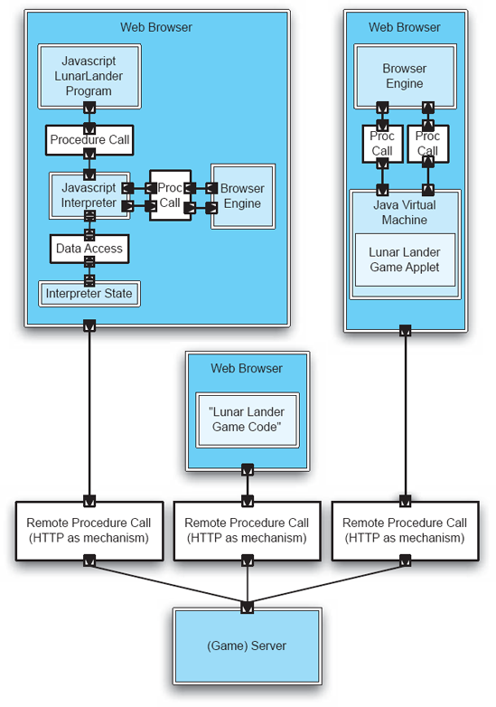
Figura 4-19. Código móvel: Lunar Lander como código sob demanda.
Estilo: Publicar-Assinar
Resumo: Assinantes se cadastram ou cancelam para receber mensagens ou conteúdos específicos. Os editores mantêm uma lista de assinaturas e transmitem mensagens para assinantes, seja de forma síncrona ou assíncrona.
Componentes: Editoras, assinantes, proxies para gerenciar distribuição.
Conectores: Chamadas de procedimento podem ser usadas dentro de programas, mais frequentemente é necessário um protocolo de rede. A assinatura baseada em conteúdo exige conectores sofisticados.
Elementos de dados: Assinaturas, notificações, informações publicadas.
Topologia: Assinantes conectam-se diretamente aos editores ou podem receber notificações via protocolo de rede de intermediários.
Variantes: Usos específicos do estilo podem exigir etapas específicas para assinar e cancelar a inscrição. O suporte para correspondência complexa de interesses de assinatura e informações disponíveis pode ser fornecido e realizado por intermediários.
Qualidades geradas: Disseminação altamente eficiente e unidirecional da informação, com acoplamento muito baixo de componentes.
Usos típicos: Disseminação de notícias — seja no mundo real ou em eventos online. Programação de interface gráfica do usuário. Jogos baseados em rede multiplayer.
Avisos: Quando o número de assinantes para um único item de dados é muito grande, provavelmente será necessário um protocolo de transmissão especializado.
Relações com linguagens de programação ou ambientes: Em sistemas em grande escala, o suporte para publicação-assinatura é fornecido por tecnologia comercial de middleware.
No exemplo da Figura 4-20, o software do módulo lunar é implantado em vários hosts de rede. Os jogadores, que são assinantes, registram seus hosts em um servidor de jogo que publica informações, como novos dados de terreno lunar, novas espaçonaves e as localizações (lunares) de todas as espaçonaves registradas que estão atualmente jogando. Uma vez registrados, os hosts assinados recebem notificações quando qualquer uma das informações que registraram foi atualizada. As notificações podem, na verdade, conter as informações que o assinante tem interesse, ou obter as informações por meio de um download explícito pode ser uma etapa separada. O primeiro caso seria apropriado para um jogo multiplayer em que os pilotos do Lander querem monitorar uns aos outros durante o pouso; O segundo caso seria apropriado, por exemplo, quando uma atualização do software do jogo é disponibilizada.
Baseado em eventos. O estilo baseado em eventos é caracterizado por componentes independentes que se comunicam exclusivamente enviando eventos através de conectores de barramento de eventos. Em sua forma mais pura, os componentes emitem eventos para o barramento de eventos, que então os transmite para todos os outros componentes. Os componentes podem reagir em resposta ao recebimento de um evento ou podem ignorá-lo; O estilo arquitetônico não exige nenhuma exigência específica. Embora pareça talvez caótico e imprevisível, esse estilo é aproximadamente análogo a como nós, como humanos, nos comportamos na sociedade. Estamos continuamente recebendo — através dos nossos sentidos — eventos do mundo exterior: alguns reagimos e outros ignoramos. Da mesma forma, estamos continuamente emitindo eventos no mundo, como ao falar. Novamente, às vezes provocam uma reação dos outros e às vezes não — como quando você está conversando com seu filho adolescente.
Por razões de eficiência, a forma pura de arquiteturas baseadas em eventos é raramente utilizada; É mais eficiente distribuir eventos apenas para aqueles componentes que demonstram interesse neles. Com essa otimização, o estilo se torna semelhante ao publicar-assinar. O caráter distintivo do estilo baseado em eventos, no entanto, é que não há classificação dos componentes em editoras e assinantes; todos os componentes potencialmente emitem e recebem eventos. No estilo baseado em eventos, a otimização da distribuição de eventos é responsabilidade dos conectores; O registro de interesse em eventos específicos é feito apenas pelos conectores. De forma semelhante, a replicação de eventos para entrega a múltiplos destinatários pode ocorrer no final do processo de transmissão e seria transparente tanto para o emissor do evento quanto para o receptor do evento. Por fim, a distribuição de eventos pode ser feita tanto em base de push quanto de pull. No caso de pull, ou polling, os destinatários do evento podem consultar o conector para ver se um novo evento está disponível. Tal consulta pode ser bloqueante (o componente espera até que um evento esteja disponível) ou não bloqueante (o componente retorna imediatamente, com um novo valor — se disponível — ou não).
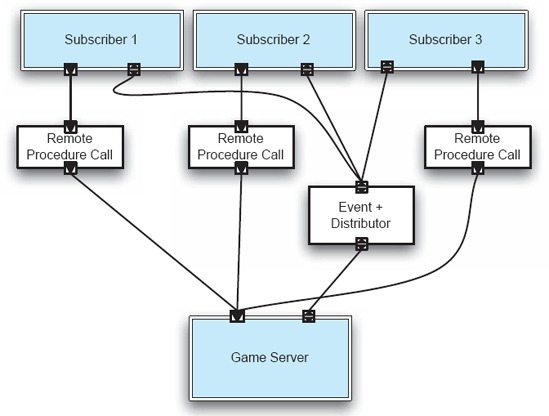
Figuras 4-20. Lunar Lander em publicar-assinar.
O estilo baseado em eventos é altamente adequado para componentes concorrentes fortemente desacoplados, onde, em determinado momento, um componente pode estar criando informações de interesse potencial para outros ou pode estar consumindo informações. Um exemplo clássico é nos mercados financeiros: Empresas independentes (traders) podem querer saber o preço mais recente de uma mercadoria vendida em Londres; Da mesma forma, quando esse trader fecha um negócio, os resultados dessa negociação representam informações de interesse para outros ao redor do mundo.
Estilo: Baseado em Eventos
Resumo: Componentes independentes emitem e recebem eventos de forma assíncrona comunicados por meio de barramentos de eventos.
Componentes: Geradores de eventos independentes e concorrentes e/ou consumidores.
Conectores: Event bus. Em variantes, mais de um pode ser utilizado.
Elementos de dados: Eventos — dados enviados como uma entidade de primeira classe pelo barramento de eventos.
Topologia: Os componentes se comunicam com os barramentos de eventos, não diretamente entre si.
Variantes: A comunicação de componentes com o barramento de eventos pode ser baseada em push ou pull.
Qualidades geradas: Altamente escalável, fácil de evoluir, eficaz para aplicações altamente distribuídas e heterogêneas.
Usos típicos: Software de interface do usuário, aplicações de ampla área envolvendo partes independentes (como mercados financeiros, logística, redes de sensores).
Avisos: Não há garantia se ou quando um evento específico será processado.
Relações com linguagens de programação ou ambientes: Tecnologias comerciais de middleware orientadas a mensagens suportam arquiteturas baseadas em eventos.
A Figura 4-21 mostra o módulo lunar projetado em um estilo baseado em eventos. O componente do relógio controla o jogo. A cada fração de segundo, o componente clock envia uma notificação de tick para o barramento de eventos, que distribui esse evento para os outros componentes.
O componente da espaçonave mantém o estado da espaçonave (sua altitude, nível de combustível, velocidade e ajuste do acelerador). Ao receber um número pré-definido de notificações do relógio, o componente da espaçonave recalcula a altitude, o nível de combustível e a velocidade (correspondentes ao voo simulado para aquele número de ticks) e então emite esses valores para o barramento de eventos.
O componente da interface gráfica (GUI) controla a tela do jogador do jogo. O recebimento de eventos que fornecem altitude, combustível e velocidade da espaçonave faz com que o componente da interface gráfica atualize sua exibição com base nesses valores. O componente GUI também recebe novas configurações de taxa de queima do usuário; Quando isso acontece, o componente emite uma notificação desse novo valor no barramento de eventos. Ao receber essa notificação, o componente da espaçonave atualiza seu modelo interno da espaçonave e, como sempre, emite o estado atualizado de volta para o barramento.
O componente lógico do jogo, que recebe tanto informações sobre o estado da espaçonave quanto sobre o tempo decorrido (contando os tique-taques do relógio), determina se o jogo acabou e, em caso afirmativo, qual era a condição final da espaçonave quando o jogo terminou e, portanto, a pontuação do jogador.
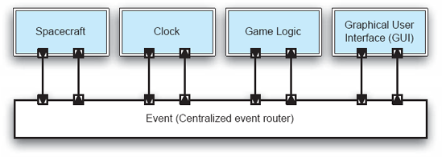
Figura 4-21. Lunar Lander no estilo baseado em eventos.
Invocação Implícita
"Invocação implícita" descreve o modelo de execução tanto do estilo public-subscribe quanto baseado em eventos. Uma ação, como a invocação de um procedimento, pode ser interpretada como resultado de alguma atividade ocorrendo em outra parte do sistema, mas as duas atividades estão distantes uma da outra. Embora haja uma relação causal, a invocação é indireta, pois não há acoplamento direto entre os componentes envolvidos. A invocação é implícita, pois o componente causante não tem consciência de que sua ação, em última instância, causa uma invocação em outra parte do sistema.
Peer-to-Peer
O estilo arquitetônico peer-to-peer (P2P) consiste em uma rede de pares autônomos frouxamente acoplados, cada par atuando tanto como cliente quanto como servidor. Os pares se comunicam usando um protocolo de rede, às vezes especializado para comunicação P2P — como era o caso das aplicações originais de compartilhamento de arquivos Napster e Gnutella. Diferentemente do estilo cliente-servidor, onde estado e lógica são centralizados no servidor, o P2P descentraliza tanto a informação quanto o controle.
A ausência de centralização torna a descoberta de recursos uma questão importante para aplicações P2P. Em uma aplicação puramente P2P, consultas de informações são enviadas para a rede de pares em geral; as requisições se propagam até que a informação seja descoberta ou até que algum limiar de propagação seja ultrapassado. Se a informação desejada for localizada, o par obtém o endereço direto desse par e entra em contato direto. Esse estilo é limitado pelo algoritmo de rede usado para consultar o sistema e pela largura de banda disponível. Aplicações híbridas otimizam esse processo fazendo com que certos pares desempenhem papéis especiais, seja para localizar outros pares ou para fornecer diretórios que localizam informações. O Napster original, por exemplo, não era uma aplicação verdadeira peer-to-peer porque usava um servidor centralizado para indexar músicas e localizar outros pares. Embora o termo peer-to-peer tenha sido popularizado por aplicativos de compartilhamento de arquivos, ele possibilita uma série de aplicações, como comércio business-to-business, chat, colaboração remota e redes de sensores.
Estilo: Peer-to-Peer
Resumo: Estado e comportamento são distribuídos entre pares que podem atuar tanto como clientes quanto como servidores.
Componentes: Pares — componentes independentes, com seu próprio estado e thread de controle.
Conectores: Protocolos de rede, frequentemente personalizados.
Elementos de dados: Mensagens de rede.
Topologia: Rede (pode ter conexões redundantes entre pares); pode variar arbitrariamente e dinamicamente.
Qualidades geradas: Computação descentralizada com fluxo de controle e recursos distribuídos entre pares. Altamente robusto diante da falha de qualquer nó. Escalável em termos de acesso a recursos e poder de computação.
Usos típicos: Quando as fontes de informação e operações são distribuídas e a rede é ad hoc.
Avisos: Quando a recuperação de informações é crítica em tempo e não pode suportar a latência imposta pelo protocolo. Segurança — As redes P2P devem prever a capacidade de detectar pares maliciosos e gerenciar a confiança em um ambiente aberto.
No exemplo da Figura 4-22, um grupo de espaçonaves lunares está a caminho de pousar em diferentes partes da lua. Múltiplos Landers são usados neste exemplo para destacar que o estilo arquitetônico P2P é projetado para suportar a interação entre componentes altamente autônomos, especialmente contextos de aplicação onde o número de componentes participantes pode variar ao longo do tempo. O Lunar Lander 1 (LL1) quer descobrir se outra espaçonave já pousou em uma área específica, para que colisões possam ser evitadas. Cada uma das espaçonaves está configurada para se comunicar com as outras usando um protocolo P2P por meio de uma rede. Uma espaçonave só poderá se comunicar com outras que estejam dentro de uma distância limitada e especificada.
Lunar Lander 1 seguirá os seguintes passos para obter as informações:
Se em algum momento posterior Tn, LL7 entrar no alcance de comunicação, LL1 poderia contatá-lo diretamente e consultá-lo por informações adicionais, como mostrado na parte inferior da figura.
Estilos Mais Complexos
Estilos mais complexos do que os discutidos acima surgiram dos esforços para explorar o conhecimento de design adquirido com experiência substancial. A complexidade reflete (a) a oferta de maiores benefícios e (b) a especialização em determinados contextos de aplicação. Como exemplos, os estilos C2 e objetos distribuídos discutidos abaixo combinam elementos de vários dos estilos anteriores para gerar ferramentas de design poderosas capazes de lidar com problemas desafiadores. Ambos resultaram de um longo período de experimentação em engenharia, no qual foram feitas inúmeras concessões de design.
O estilo C2 (componentes e conectores) surgiu do desejo de obter os benefícios do padrão modelo-visualização-controlador em um ambiente de plataforma distribuído e heterogêneo. Conceitos de arquiteturas em camadas e baseadas em eventos foram adicionados. O estilo resultante, embora originalmente desenvolvido para suportar aplicações de interface gráfica, mostrou-se benéfico em uma grande variedade de aplicações — de fato, mais fora do domínio das interfaces gráficas do que dentro delas. O papel principal do C2 nesta apresentação é mostrar como elementos de muitos estilos podem ser combinados de forma criteriosa para atender a uma variedade de necessidades.
O estilo de objetos distribuídos tem suas raízes no estilo orientado a objetos. Assim como no C2, seus desenvolvedores buscaram estender os benefícios de um estilo central para um mundo distribuído e heterogêneo. A interoperabilidade entre componentes ou objetos implementados em diferentes linguagens de programação é alcançada por meio do uso de conectores e adaptadores. As diferenças mais óbvias entre os dois estilos são que várias preocupações de rede são explicitamente abordadas no estilo de objetos distribuídos, enquanto o C2 apresenta menor acoplamento conceitual entre os componentes.
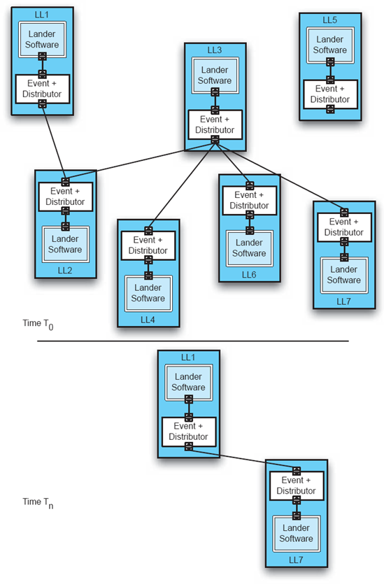
Figuras 4-22. Lunar Lander como uma aplicação P2P.
C2
C2 é um estilo muito mais complexo do que os considerados anteriormente, então, para motivar a complexidade, começamos listando alguns dos benefícios alcançados pela aplicação desse estilo.
Benefícios do C2
Cada um desses benefícios foi visto nos estilos simples acima; a contribuição do C2 é combinar estilos simples selecionados em uma abordagem coerente e abrangente. Os parágrafos a seguir apresentam as restrições do C2. Aqui fornecemos mais detalhes sobre as limitações para facilitar a compreensão do estilo. O leitor deve estar ciente, no entanto, de que mesmo os estilos simples descritos acima têm restrições de interface mais detalhadas na prática do que apresentamos.
Restrições C2
Uma observação importante diz respeito à aparente dependência de um dado componente em relação ao seu superstrato, ou seja, os componentes acima dele, já que um componente pode emitir uma solicitação específica para cima em uma arquitetura. Se cada componente for construído de modo que seu domínio superior corresponda de perto aos domínios inferiores daqueles componentes com os quais se pretende especificamente interagir na arquitetura dada, seu valor de reutilizabilidade é muito reduzido; ela só pode ser substituída por componentes com domínios superiores igualmente restritos. Para evitar isso, C2 introduz a noção de tradução de domínio. A tradução de domínio é uma transformação das solicitações emitidas por um componente no formulário específico entendido pelo destinatário da solicitação, bem como a transformação das notificações recebidas por um componente em um formulário que ele compreende.
C2 suporta composicionalidade, ou composição hierárquica, pela qual toda uma arquitetura se torna um único componente em outra arquitetura maior.
Cada componente pode ter seu(s) próprio(s) thread(s) de controle. Isso simplifica a modelagem e programação de aplicações multicomponentes, multiusuário e concorrentes, além de permitir a exploração de plataformas distribuídas.
Por fim, não pode haver suposição de um espaço de endereçamento compartilhado entre os componentes. Qualquer premissa de um espaço de endereçamento compartilhado seria irrazoável em um estilo arquitetônico que permite a composição de componentes heterogêneos e altamente distribuídos, desenvolvidos em diferentes linguagens com seus próprios fios de controle, estruturas internas e domínios de discurso.
Uma arquitetura simples C2 para a aplicação do módulo lunar é mostrada na Figura 4-23. Com relação ao uso de eventos, ele funciona em grande parte como a solução mostrada na Figura 4-21, o estilo baseado em eventos. Aqui, porém, tanto os componentes da espaçonave quanto do clock são garantidos pela arquitetura para não perceberem a presença da lógica do jogo e dos componentes da interface gráfica.
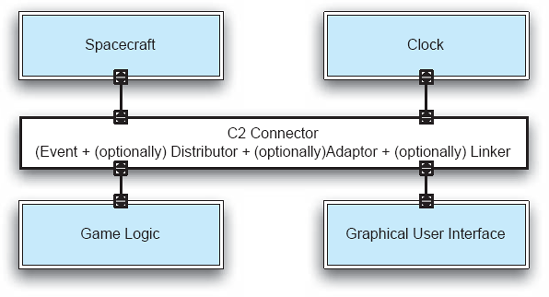
Figuras 4-23. Lunar Lander no estilo C2.
Estilo: C2
Resumo: Um estilo de invocação indireta no qual componentes independentes se comunicam exclusivamente por meio de conectores de roteamento de mensagens. Regras rígidas sobre conexões entre componentes e conectores induzem camadas.
Componentes: Geradores de mensagens independentes e potencialmente concorrentes e/ou consumidores.
Conectores: Roteadores de mensagens que podem filtrar, traduzir e transmitir mensagens de dois tipos — notificações e solicitações.
Elementos de dados: Mensagens — dados enviados como entidades de primeira classe pelos conectores. Mensagens de notificação anunciam mudanças de estado. Mensagens de solicitação solicitam a execução de uma ação.
Topologia: Camadas de componentes e conectores, com um topo e um fundo definidos, onde as notificações fluem para baixo e as requisições para cima.
Restrições adicionais impostas:
Qualidades que resultaram:
Usos típicos: Aplicações reativas e heterogêneas. Aplicações que exigem adaptabilidade de baixo custo.
Avisos: O roteamento de eventos entre múltiplas camadas pode ser ineficiente. Overhead alto para alguns tipos simples de interação de componentes.
Relações com linguagens ou ambientes de programação: Frameworks de programação são usados para facilitar a criação de implementações fiéis às arquiteturas do estilo. Suporte para Java, C, Ada.
Uma aplicação mais instrutiva do C2 é apresentada na Figura 4-25, na qual um jogo semelhante ao KLAX [7] é suportado. Uma captura de tela do jogo é mostrada na Figura 4-24. A essência do jogo é que peças coloridas caem dos escorregas no topo da tela do usuário. Uma paleta é usada para se mover horizontalmente pela tela; Pode prender as telhas quando elas caem dos escorregas. Ao inverter a paleta, os azulejos podem ser lançados nos poços abaixo. Ao combinar três ou mais peças da mesma cor, horizontalmente, verticalmente ou diagonalmente através dos poços, os pontos são marcados e as peças são subsequentemente removidas do tabuleiro. Se os azulejos não forem capturados pela paleta, vidas são perdidas. Vidas também são perdidas se os poços forem deixados transbordar.
Os componentes que compõem o jogo semelhante ao KLAX podem ser divididos em três grupos lógicos. No topo da arquitetura estão os componentes que encapsulam o estado do jogo mais o relógio. Esses componentes são colocados no topo porque o estado do jogo é vital para o funcionamento dos outros dois grupos de componentes. Os componentes de estado do jogo não recebem notificações, mas respondem a solicitações e emitem notificações de mudanças internas de estado. De certa forma, esses componentes desempenham o papel de servidores, ou talvez de quadros negros. As notificações são direcionadas para o próximo nível, onde são recebidas tanto pelos componentes de lógica do jogo quanto pelos componentes artistas.
Os componentes lógicos do jogo solicitam mudanças no estado do jogo de acordo com as regras do jogo e interpretam notificações de mudança de estado para determinar o estado do jogo em andamento. Por exemplo, se uma peça for largada de um duto, a Lógica de Posição Relativa determina se a paleta está em posição de prender a placa. Se sim, uma solicitação é enviada para a Paleta, adicionando o tile à paleta. Caso contrário, uma notificação é enviada informando que um tile foi descartado. Essa notificação é detectada pela Lógica de Status, fazendo com que o número de vidas seja diminuído. Os componentes lógicos desempenham suas funções de acordo com o recebimento de um número específico de notificações do relógio.
Os componentes do artista recebem notificações de mudanças no estado do jogo, fazendo com que atualizem suas representações. Cada artista mantém o estado de um conjunto de objetos gráficos abstratos que, quando modificados, enviam notificações de mudança de estado na esperança de que um componente gráfico de nível inferior os renderize na tela. O Tile Artist, por exemplo, oferece uma apresentação flexível para tiles. O Tile Artist intercepta quaisquer notificações sobre objetos de tile e emite notificações sobre objetos mais concretos desenháveis. Por exemplo, uma notificação de Tile Created–received pode resultar na emissão de uma notificação de Retângulo Criado. O componente Layout Manager recebe todas as notificações dos artistas e determina as coordenadas para garantir que os elementos do jogo sejam desenhados na justaposição bidimensional correta. O componente Graphics Binding recebe todas as notificações sobre o estado dos objetos gráficos dos artistas e as traduz em chamadas para um sistema de janelas. Eventos de usuário, como pressionar uma tecla, são traduzidos em solicitações que são enviadas para os componentes do artista.
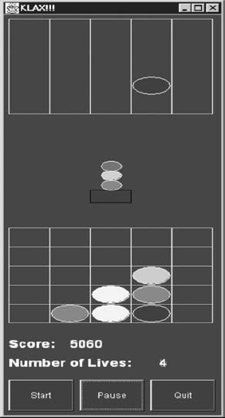
Figura 4-24. Captura de tela de um jogo parecido com KLAX.
A aplicação do estilo C2 a esse design traz vários benefícios. Uma delas é a criação fácil de jogos relacionados, mas diferentes. Com a substituição de três componentes, o jogo pode ser transformado em um em que letras em vez de peças caem pelos escorregos, e a lógica do jogo é baseada na soletração das palavras nos poços. Os componentes envolvidos são o artista de tile, a lógica de correspondência de tiles e a lógica de colocação de próximo tile, que se tornam, respectivamente, os componentes de artista de letras, lógica de correspondência de palavras e lógica de colocação de próximas letras. Substituições ou adições de componentes igualmente confinadas e fáceis resultam em jogos multiplayer baseados em rede, uma versão de alta pontuação, e assim por diante. O aplicativo pode rodar sobre limites de rede, o kit de ferramentas de interface pode ser trocado sem modificações para os vários artistas, e componentes podem ser executados simultaneamente.
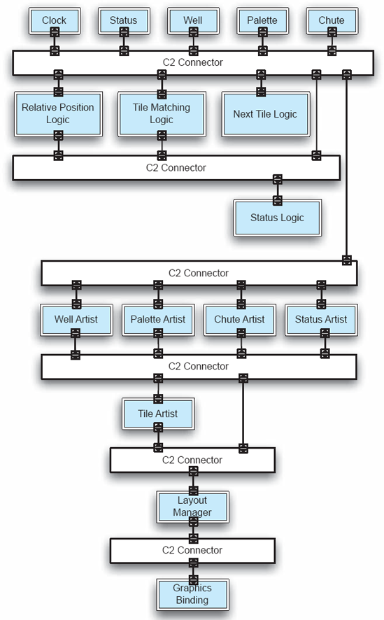
Figuras 4-25. Um videogame no estilo KLAX, no estilo C2.
Objetos distribuídos
O estilo de objetos distribuídos representa uma combinação e adaptação de vários estilos mais simples. O vocabulário fundamental vem, claro, do estilo simples orientado a objetos considerado anteriormente no capítulo. Esse estilo é complementado com o estilo cliente-servidor para fornecer a noção de objetos distribuídos, com acesso a esses objetos a partir de diferentes processos executando em computadores diferentes. A necessidade postulada de comunicação entre máquinas e entre línguas impõe uma restrição à comunicação entre os processos e, portanto, em certa medida, observa-se a influência do pipe-and-filter, com a serialização dos parâmetros (data marshaling) para comunicação.
Nesse estilo, portanto, objetos, no sentido padrão da terminologia orientada a objetos, são instanciados em diferentes hosts, cada um dos quais expõe uma interface pública. Os objetos podem ser desde estruturas de dados até sistemas legados de milhões de linhas. As interfaces são especiais porque todos os parâmetros e valores de retorno devem ser serializáveis para que possam ser usados na rede. O modo padrão de interação entre objetos é a chamada de procedimento síncrona, embora extensões assíncronas sejam encontradas em algumas versões particulares de objetos distribuídos, como o CORBA.
Estilo: Objetos Distribuídos
Resumo: Funcionalidade de aplicação dividida em objetos (grosseiros ou finos) que podem rodar em hosts heterogêneos e podem ser escritos em linguagens de programação heterogêneas. Os objetos fornecem serviços para outros objetos por meio de interfaces bem definidas e fornecidas. Objetos invocam métodos através das fronteiras do host, processo e linguagem por meio de chamadas de procedimento remoto (RPCs), geralmente facilitadas por middleware.
Componentes: Objetos (componentes de software que expõem serviços por meio de interfaces bem definidas fornecidas).
Conector: Chamadas remotas de procedimentos (invocações de métodos remotas).
Elementos de dados: Argumentos para métodos, valores de retorno e exceções.
Topologia: Grafo geral de objetos de chamadores para chamados; em geral, os serviços necessários não são explicitamente representados.
Restrições adicionais impostas: Os dados passados em chamadas de procedimentos remotos devem ser serializáveis. Os chamadores devem lidar com exceções que podem surgir devido a falhas de rede ou processo.
Qualidades geradas: Separação rigorosa das interfaces das implementações, bem como outras qualidades dos sistemas orientados a objetos em geral, além de interoperabilidade em grande parte transparente entre fronteiras de localização, plataforma e linguagem.
Usos típicos: Criação de sistemas de software distribuídos compostos por componentes rodando em diferentes hosts. Integração de componentes de software escritos em diferentes linguagens de programação ou para diferentes plataformas.
Avisos: As interações tendem a ser majoritariamente síncronas e não aproveitam a concorrência presente em sistemas distribuídos. Usuários que desejam serviços fornecidos por middleware (rede, localização e/ou transparência da linguagem) frequentemente percebem que o middleware induz o estilo dos objetos distribuídos em suas aplicações, seja ou não o melhor estilo. Dificuldade para lidar com fluxos e fluxos de dados de alto volume.
Relações com linguagens ou ambientes de programação: Implementações em quase todas as linguagens e ambientes de programação.
CORBA. CORBA é um padrão para implementação de middleware que suporta o desenvolvimento de aplicações compostas por objetos distribuídos. Muitos profissionais de desenvolvimento de software terão experiência com, ou pelo menos ouvido falar, da tecnologia CORBA. No entanto, a relação da CORBA com a arquitetura de software e os estilos arquitetônicos nem sempre é clara. Embora a CORBA não seja mais uma tecnologia tão popular quanto antes, ela é emblemática de um conjunto de tecnologias (como DCOM e RMI) que buscam suportar objetos distribuídos e, portanto, merecem estudo.
A ideia básica por trás do CORBA é que uma aplicação é dividida em objetos, que são efetivamente componentes de software que expõem uma ou mais interfaces fornecidas. No CORBA, essas interfaces fornecidas são especificadas em termos de uma notação neutra em relação à linguagem de programação e à plataforma chamada Interface Definition Language (IDL). O IDL se assemelha muito à forma como as interfaces de classes são especificadas em uma linguagem de programação orientada a objetos. Uma descrição IDL da interface para o componente de armazenamento de dados de um sistema de pouso lunar pode ser a seguinte.
interface IDataStore{
double getAltitude();
void setAltitude (em double newAltitude);
duplo getBurnRate();
void setBurnRate (em double newBurnRate);
void getStatus(out dupla altitude,
sai dobro de taxa de queima,
para fora velocidade dobrada,
sem combustível duplo,
fora em dobro);
}
Todo acesso a um objeto ocorre por meio de chamadas para uma de suas interfaces especificadas pelo IDL. O IDL é fortemente tipado, o que significa que chamadas e parâmetros podem ser verificados por tipo em tempo de compilação.
A Figura 4-26 ilustra como o CORBA conecta objetos através dos limites de máquinas, linguagens e processos. A parte superior do diagrama mostra a visão conceitual, ou lógica, que deve ser familiar para qualquer pessoa que tenha escrito um programa orientado a objetos. Um programa cliente obtém um ponteiro para um objeto que pode realizar um serviço para ele, aqui chamado de Instância de Objeto. Após obter esse ponteiro, ele faz chamadas na instância do objeto por meio de um de seus métodos de interface.
No contexto de uma única linguagem de programação, em um único processo rodando em uma única máquina, fazer uma chamada de objeto assim é simples. O ponteiro, nesse caso, é uma referência direta de memória, e a chamada representa uma chamada simples de procedimento síncrono. Quando estão envolvidos limites de linguagem, processo e máquina, as coisas se tornam mais complicadas, e esse é o problema que a CORBA tenta superar. As implementações do CORBA são acompanhadas por ferramentas chamadas compiladores IDL que podem direcionar combinações específicas de plataforma e linguagem de programação (como C++ no Windows). Quando uma interface IDL é executada por um compilador IDL, dois artefatos de código são criados, conhecidos como object stub e object skeleton.
Um esqueleto de objeto é um objeto na linguagem/plataforma de programação de destino que fornece implementações vazias para cada método definido na interface IDL. Os tipos IDL são traduzidos para tipos locais de linguagem de programação. O desenvolvedor é então responsável por implementar esses métodos na linguagem de programação de destino. Essas implementações compõem a instância do objeto, também conhecida como o verdadeiro objeto.
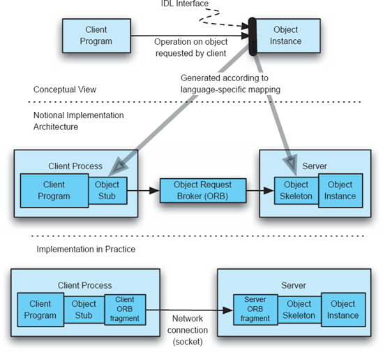
Figuras 4-26. Diagrama CORBA nocional.
O stub do objeto é o complemento do esqueleto do objeto. É um objeto que fornece implementações para cada método na interface IDL, novamente na linguagem de programação de destino. No entanto, essas implementações de métodos não executam realmente os serviços fornecidos pelo objeto verdadeiro. Em vez disso, quando um método no stub é chamado, os parâmetros de chamada são codificados em um bloco de dados binários em um processo chamado serialização ou marshaling. O stub então envia esse bloco de dados através dos limites da máquina ou do processo, usando uma rede ou outro mecanismo de comunicação entre processos (IPC), para o esqueleto do objeto. O software que facilita isso é conhecido na CORBA como object request broker, ou ORB. Dependendo da implementação do CORBA, isso pode ser um software separado, ou pode fazer parte do stub e esqueleto. O esqueleto recebe os dados de chamada, faz a invocação correspondente na instância do objeto e então faz marshal do valor de retorno ou exceção para retorno ao stub. O stub então retorna esses dados ao chamador, que na figura é o programa cliente.
Dessa forma, um programa cliente pode invocar um objeto remoto sem conhecimento explícito de que ele é remoto. Do ponto de vista do programa cliente, o objeto stub está fornecendo o serviço que ele precisa. O objeto stub, no entanto, não está realmente fornecendo o serviço. Em vez disso, ele envia os dados da chamada pela rede para o esqueleto, que chama a instância do objeto — o verdadeiro objeto — para realizar o serviço real. Os dados são retornados pelo mesmo caminho, mas ao contrário.
A última parte do quebra-cabeça é como o par de stubs do programa cliente/objeto obtém um ponteiro ou referência ao par esqueleto/instância do objeto em primeiro lugar. Isso pode ser feito de várias maneiras, mais comumente por meio de um serviço de busca ou nomeação conhecido como object request broker (ORB), que mantém um diretório de objetos rodando em hosts e permite que os clientes os consultem pelo nome. A colocação conceitual do ORB é mostrada no meio da Figura 4-26. Na prática, o ORB é distribuído entre os processos cliente e servidor, como ilustrado na parte inferior da figura.
O CORBA faz o melhor que pode para garantir que implementações de objetos cliente e servidor não saibam que a chamada entre elas está atravessando um limite de linguagem, processo ou máquina. No entanto, esses limites nunca podem ser completamente mascarados. Existem duas principais diferenças entre uma chamada de procedimento local e uma chamada remota. Primeiro, todos os dados que atravessam uma chamada de procedimento remoto devem ser serializáveis. Ou seja, o stub e o esqueleto devem ser capazes de transformar os dados em um bloco de dados binários para transmissão por uma rede. Parâmetros que contêm ponteiros para blocos arbitrários de memória na máquina local ou objetos de controle como threads não podem ser serializados e, portanto, não podem ser passados ou retornados em uma chamada remota de procedimento. Segundo, chamadas de procedimento remoto sofrem de uma variedade muito maior de falhas potenciais do que chamadas locais. Em uma chamada de procedimento local, assume-se que a chamada em si — a transferência de controle e dados do chamador para o chamado — não pode falhar. Em uma chamada de procedimento remoto, problemas de rede e processos inativos podem causar a falha da própria chamada. Nesses casos, uma exceção em tempo de execução é levantada pela chamada, mas tais exceções não seriam esperadas no contexto de uma chamada de procedimento local. (Problemas adicionais com aplicações baseadas em rede são discutidos emCapítulo 11.)
Embora as chamadas de procedimento remoto sejam, em alguns aspectos, mais limitadas e frágeis do que as locais, elas também podem ser mais flexíveis. As chamadas podem ser redirecionadas ou registradas pelo intermediário de requisições de objetos sem quaisquer alterações nos objetos cliente ou servidor. Novos objetos de servidor e até novos hosts podem ser criados dinamicamente e entrar em operação durante a execução da aplicação, sendo então consultados por clientes posteriores. Isso confere um certo dinamismo às aplicações construídas usando CORBA.
A Figura 4-27 mostra uma aplicação simples do CORBA no projeto de uma versão de treinamento com dois pilotos do módulo Lunar Land (módulo de aterrissador). Nesta versão, dois clientes usuários independentes, Trainer e Trainee, podem visualizar o estado do módulo de aterragem durante sua descida e ambos os clientes podem ajustar a taxa de consumo de combustível, r. Além disso, um terceiro cliente, Houston, monitora o estado do módulo de aterragem e dos dois pilotos. O estado do módulo de aterragem é mantido como um objeto CORBA em um servidor remoto, o Sistema de Simulação de Aterrissadores. Os clientes manipulam a taxa de consumo fazendo chamadas através dos serviços CORBA. Cada cliente piloto também mantém o estado de seu piloto. Assim, quando Houston observa a altitude do módulo de aterrissagem, a solicitação é roteada para o servidor. No entanto, quando o Cliente Houston visualiza a frequência cardíaca dos pilotos, a chamada é encaminhada para ambos os clientes pilotos.
A descrição aqui do CORBA foi bastante breve, e o exemplo simplista. Na prática, o CORBA oferece um conjunto rico de serviços para gerenciar objetos distribuídos e construir arquiteturas distribuídas sofisticadas. A maioria das implementações CORBA é acompanhada por CORBAservices, objetos e interfaces que podem ser chamados para lidar com ciclos de vida de objetos, relacionamentos, persistência, externalização, nomeação, comércio, eventos, transações, concorrência, propriedades, consultas, segurança, licenciamento, versionamento, notificação, entre outros.
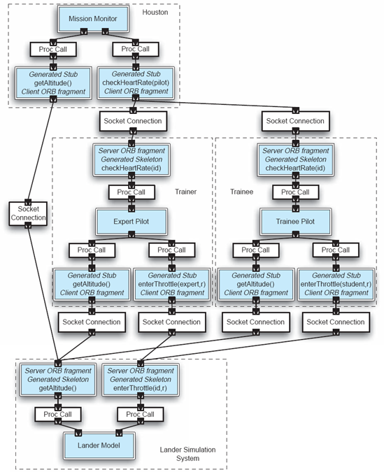
Figura 4-27. Versão de treinamento do módulo lunar, em CORBA. Dois pilotos podem colocar as mãos nos controles.
Selecionar o CORBA como base para um projeto de desenvolvimento de software é uma faca de dois gumes. Por um lado, o uso do CORBA permite que sistemas sejam implementados com componentes escritos em diferentes idiomas em diferentes plataformas, e o middleware CORBA automaticamente oculta a maioria das diferenças. Para desenvolvedores que precisam integrar tecnologias modernas com sistemas legados, o apelo é quase bom demais para deixar passar. No entanto, usar CORBA tem um preço. O uso do CORBA oferece esses benefícios de interoperabilidade, mas também induz aplicações a serem construídas no estilo de objetos distribuídos.
Objetos distribuídos não é um estilo ideal para toda aplicação. Desvantagens incluem, por exemplo, que componentes no estilo de objetos distribuídos são obrigados a especificar explicitamente interfaces fornecidas, mas não especificar interfaces obrigatórias. Dependências entre objetos podem, portanto, estar profundamente enraizadas. Objetos no mundo CORBA são constantemente criados, ligados, desvinculados e destruídos. Isso dificulta a compreensão da configuração de uma aplicação CORBA em qualquer momento. Interações distribuídas entre objetos tendem a ser chamadas e retornos síncronas, e muitos desses sistemas têm dificuldade com invocações assíncronas ou dados que viajam em fluxos.
O Grande Estilo Bola de Lama
O estilo arquitetônico Big Ball of Mud foi descrito por Brian Foote e Joseph Yoder como o estilo arquitetônico mais comum de todos (Foote e Yoder 1997). O estilo não impõe restrições, além de "fazer o trabalho". Oferece os benefícios de: "Não precisávamos pensar muito" e "Vai funcionar por enquanto. Espero que sim." O software no estilo BBoM é improvisado e improvisado. Esses sistemas frequentemente crescem por acréscimo: novos pedaços de código são colados em código pré-existente para atender a novas demandas, sem disciplina, plano ou cuidado. O estilo BBoM é um estilo importante para os designers terem em mente por uma razão simples, mas crítica: "Se você não consegue articular por que sua aplicação não é uma grande bola de lama, então é."
Discussão: Padrões e Estilos
Dando um passo atrás dos inúmeros detalhes associados aos estilos e padrões discutidos acima, características comuns são evidentes. Fundamentalmente, estilos e padrões refletem a experiência e codificam o conhecimento adquirido a partir dessa experiência. Criar um bom estilo envolve reflexão sobre a experiência, abstração do conhecimento dos detalhes e, possivelmente, generalização. Assim, estilos são "experiência refinada em ação."
Apesar de os estilos representarem sabedoria arduamente conquistada no desenvolvimento de sistemas, seu uso às vezes é resistido. Por que? Porque a própria natureza dos estilos, a adesão a um estilo durante o design, exige que o estilista trabalhe dentro do conjunto de restrições que compõem o estilo. De alguma forma, a própria ideia de restringir o designer parece contraproducente e limitante. O caráter curioso e não intuitivo dos estilos e do design, no entanto, é que, por meio da adesão às restrições, se alcança grande liberdade e eficácia no design.
A Liberdade das Restrições
Quando vistos como um conjunto de restrições, os estilos limitam o designer de várias maneiras:
De onde então vem a liberdade e a eficácia dos estilos? Diversas fontes são evidentes:
Combinação, Modificação e Criação de Estilos e Padrões
Embora estudar a longa lista de estilos arquitetônicos nas páginas anteriores possa ter sido exaustivo, a lista certamente não é exaustiva. Um ponto que enfatizamos é que os estilos capturam a experiência e a destilam em uma essência utilizável em novas situações de desenvolvimento. Visto dessa forma, cada domínio de aplicação pode ter um estilo específico associado. Mais comumente, porém, estilos apropriados para um determinado domínio serão agregações ou combinações de estilos mais simples.
A combinação de estilos é motivada pelo desejo de obter múltiplos benefícios no design. Um bom exemplo de estilo composto e especializado é o estilo C2 discutido na Seção 1.3.5. C2 é uma combinação de modelo-visualização-controlador, sistemas em camadas e estilos baseados em eventos. REST, um exemplo ainda mais complicado, será discutido emCapítulo 11. O REST foi introduzido no início deCapítulo 1, mas foi discutido lá sem referência a como foi desenvolvido.
Saber que estilos podem ser combinados, especializados ou desenvolvidos do zero leva ao perigo de criar novos estilos desnecessariamente ou de forma imprudente. Qualquer designer poderia alegar, com alguma justificativa, que sua experiência é o que mais importa para ele, e portanto a codificação de um estilo que represente essa experiência é importante. Lembre-se, porém, de que a própria experiência precisa ser comparada à experiência agregada de outros designers dentro de uma empresa ou domínio de aplicação. Além disso, a formulação de mais um estilo arquitetônico (YAAS, de fato) anula uma das vantagens dos estilos: a promoção de uma comunicação eficaz entre designers. Os lentes da conveniência e do "bom o suficiente" raramente superam os benefícios reais de aplicar cuidadosamente estilos estabelecidos e conhecidos.
Se, após considerar uma experiência substancial, um grupo decidir formular um novo estilo para capturar essa experiência e seus insights, deve ser feito com o objetivo de capturar apenas o que é verdadeiramente central, evitando questões incidentais. "Menos é mais" deve prevalecer até que a validação adequada seja obtida para a abordagem recém-formulada. Um objetivo importante para tal exercício deve ser uma articulação clara dos invariantes que são obtidos como resultado da adição de restrições.
Um breve resumo dos estilos considerados neste capítulo aparece emTabela 4-1. Cada um dos estilos está listado na coluna à esquerda. Um resumo resumido do estilo é então apresentado, seguido de conselhos sobre quando usá-lo e quando evitá-lo. Embora esta tabela seja longa, os conselhos e resumos são extremamente breves e, portanto, omitem as nuances e detalhes necessários para guiar totalmente seu uso. Portanto, essa tabela deve ser usada apenas como um primeiro corte para determinar quais estilos podem ser apropriados para um determinado desafio de design. As tabelas e discussões mais detalhadas que apareceram anteriormente neste capítulo devem então ser referenciadas para avaliar os estilos candidatos.
Recuperação de projeto
Até agora, discutimos situações em que um arquiteto tem, ou tem acesso, experiência prévia no design de um tipo específico de sistema para um domínio compreendido. Se isso não for o caso, o problema enfrentado pelo arquiteto cai na área do design sem precedentes. No entanto, antes de considerarmos abordagens para lidar com design sem precedentes, vamos considerar mais uma fonte de experiência — a recuperação de projetos.
Diferentes métodos de design de software diferem claramente nos detalhes de como os desenvolvedores chegam a um sistema de software. No entanto, em maior ou menor grau, todos eles se baseiam na suposição de que um projeto de software começa com algum tipo de coleta e especificação de requisitos, atinge seu principal marco na implementação e entrega do sistema, e então continua, possivelmente indefinidamente, em uma fase de operação e manutenção. A arquitetura do sistema de software é, em muitos aspectos, a peça central desse processo: ela deve ser uma reificação eficaz da concepção técnica do sistema e ser fielmente refletida na implementação do sistema. Além disso, a arquitetura tem como objetivo guiar a evolução do sistema, ao mesmo tempo em que é atualizada no processo.
Infelizmente, para muitos sistemas, isso acaba sendo uma imagem idealizada. Alguns sistemas são hackeados sem consideração cuidadosa ou documentação das preocupações arquitetônicas. Outros sistemas são cuidadosamente projetados e esses projetos iniciais são documentados, mas modificações repetidas são feitas posteriormente sem preocupação em manter a coerência intelectual, resultando em uma erosão arquitetônica substancial. A evolução do software certamente exige compreensão aprofundada de uma aplicação, sua complexidade, sua arquitetura geral, seus principais componentes e suas interações e dependências. Infelizmente, muitos desses requisitos são frequentemente ignorados, com uma disposição frequente em comprometer a qualidade e a longevidade de um sistema para, por exemplo, diminuir o tempo de lançamento de uma nova versão. Essa atitude, aliada à complexidade dos sistemas envolvidos e à descuido com que as mudanças neles são frequentemente documentadas, contribui diretamente para inúmeros casos registrados de erosão arquitetônica.
Mesa 4-1. Uma Tabela Comparativa de Estilos Arquitetônicos
|
Categoria de Estilo & Nome |
Resumo |
Use quando |
Evite quando |
|
Estilos influenciados pela linguagem |
|||
|
Programa principal e sub-rotinas |
O programa principal controla a execução do programa, chamando múltiplas sub-rotinas. |
... A aplicação é pequena e simples. |
... estruturas de dados complexas necessárias (devido à falta de encapsulamento). ... Modificações futuras prováveis. |
|
Orientado a objetos |
Objetos encapsulam funções de estado e acesso. |
... Mapeamento próximo entre entidades externas e objetos internos é sensato. ... muitas estruturas de dados complexas e inter-relacionadas. |
... A aplicação é distribuída em uma rede heterogênea. ... É necessária uma grande independência entre os componentes. ... É exigido um desempenho muito alto. |
|
Camadas |
|||
|
Máquinas virtuais |
Máquina virtual, ou camada, oferece serviços para camadas acima dela. |
... Muitas aplicações podem ser baseadas em uma única camada comum de serviços. ... A especificação de serviço da interface é resiliente quando a implementação de uma camada precisa mudar. |
... Muitos níveis são necessários (causa ineficiência). ... Estruturas de dados devem ser acessadas a partir de múltiplas camadas. |
|
Cliente-servidor |
Clientes solicitam serviço de um servidor. |
... A centralização de computação e dados em um único local (o servidor) promove a administrabilidade e escalabilidade. ... Processamento pelo usuário final limitado à entrada e apresentação de dados. |
... A centralidade apresenta um risco de ponto único de falha. ... Largura de banda de rede limitada. ... As capacidades da máquina cliente rivalizam ou superam as do servidor. |
|
Estilos de fluxo de dados |
|||
|
Sequencial-lote |
Programas separados executados sequencialmente, com entrada em lote. |
... problema facilmente formulado como um conjunto de etapas sequenciais e separáveis. |
... interatividade ou concorrência entre componentes necessária ou desejável. ... Acesso aleatório aos dados necessário. |
|
Tubo e filtro |
Programas separados, também conhecidos como filtros, executados, potencialmente simultaneamente. Os tubos roteiam fluxos de dados entre filtros. |
[como no lote sequencial] ... Os filtros são úteis em mais de uma aplicação. ... estruturas de dados facilmente serializáveis. |
... interação entre componentes necessária. |
|
Memória Compartilhada |
|||
|
Quadro-negro |
Programas independentes, acesso e comunicação exclusivamente por meio de um repositório global conhecido como blackboard. |
... Todo cálculo se concentra em uma estrutura de dados comum e em constante mudança. ... ordem de processamento determinada dinamicamente e orientada por dados. |
... Os programas lidam com partes independentes dos dados comuns. ... Interface com dados comuns suscetíveis a mudanças. ... As interações entre os programas independentes exigem regulação complexa. |
|
Baseado em regras |
Use fatos ou regras inseridos na base de conhecimento para resolver uma dúvida. |
... dados e consultas do problema expressáveis como regras simples sobre as quais a inferência pode ser realizada. |
... O número de regras é grande. ... Interação entre regras presente. ... Alto desempenho necessário. |
|
Intérprete |
|||
|
Intérprete |
O interpretador analisa e executa o fluxo de entrada, atualizando o estado mantido pelo interpretador. |
... Comportamento altamente dinâmico exigido. Alto grau de personalização para o usuário final. |
... Alto desempenho exigido. |
|
Código móvel |
O código é móvel, ou seja, é executado em um host remoto. |
... É mais eficiente mover o processamento para um conjunto de dados do que o conjunto de dados para o processamento. ... É desejável personalizar dinamicamente um nó de processamento local por meio da inclusão de código externo. |
... A segurança do código móvel não pode ser garantida, nem é limitada ao sandbox. ... É necessário um controle rigoroso das versões do software implantado. |
|
Invocação Implícita |
|||
|
Publicar-assinar |
As editoras transmitem mensagens para assinantes. |
... Os componentes são muito frouxamente acoplados. ... Os dados de assinatura são pequenos e transportados de forma eficiente. |
... middleware para suportar dados de alto volume não está disponível. |
|
Baseado em eventos |
Componentes independentes emitem e recebem eventos assíncronos comunicados por barramentos de eventos. |
... os componentes são concorrentes e independentes. ... componentes heterogêneos e distribuídos pela rede. |
... é exigida garantia de processamento em tempo real dos eventos. |
|
Peer-to-Peer |
|||
|
|
Os pares mantêm estado e comportamento e podem atuar tanto como clientes quanto servidores. |
... Os pares são distribuídos em uma rede, podem ser heterogêneos e mutuamente independentes. ... robustez diante de falhas independentes e alta escalabilidade necessária. |
... A confiabilidade de pares independentes não pode ser garantida ou gerenciada. ... nós designados para apoiar a descoberta de recursos indisponíveis. |
|
Estilos Mais Complexos |
|||
|
C2 |
Rede em camadas de componentes concorrentes comunicando-se por eventos. |
... independência das tecnologias de substrato necessária. ... Aplicações heterogêneas. ... Suporte para linhas de produtos desejado. |
... alto desempenho exigido em várias camadas. ... Múltiplas threads são ineficientes. |
|
Objetos distribuídos |
Objetos instanciados em diferentes hosts. |
... O objetivo é preservar a ilusão de transparência da localização. |
... Alta sobrecarga de suporte ao middleware é excessiva. ... Propriedades da rede são impossíveis de mascarar, na prática. |
Evoluir um sistema com uma arquitetura não documentada, ou documentada mas degradada, representa desafios enormes para os engenheiros. Isso resulta em um perigo real de que as modificações destinadas a fornecer novas funcionalidades sejam implementadas incorretamente e aquelas destinadas a remover um problema específico no sistema existente causem outros problemas imprevistos. Para lidar com essa questão, pesquisadores e profissionais normalmente têm se envolvido em recuperação arquitetônica, um processo pelo qual o projeto arquitetônico do sistema é extraído de seus outros artefatos, que provavelmente serão atualizados de forma mais confiável do que o próprio projeto. Esses artefatos podem incluir requisitos, especificações formais, planos de teste e assim por diante. No entanto, na maioria das vezes, a recuperação de projeto utiliza a implementação do sistema como ponto de partida.
Simplificando, então, a tarefa da recuperação de projeto é examinar a base de código existente — tanto código-fonte quanto possivelmente arquivos binários para qualquer funcionalidade desenvolvida externamente que seja reutilizada pronta — e determinar os componentes do sistema, conectores e topologia geral. Como em outras tarefas arquitetônicas, os objetivos da recuperação serão específicos de cada ponto de vista.
Uma abordagem comum para recuperação arquitetônica é o agrupamento das entidades em nível de implementação em elementos arquitetônicos. Com base na abordagem usada para agrupar entidades do código-fonte, como classes, procedimentos ou variáveis, as técnicas de clustering de software podem ser divididas em duas grandes categorias: clustering sintático e semântico.
O clustering sintático foca exclusivamente nas relações estáticas entre entidades em nível de código. Isso significa que a atividade de recuperação de projeto pode ser realizada sem a execução do sistema. As características funcionais ou o significado das entidades em nível de código não são levados em consideração. Em vez disso, as entidades são agrupadas com base em convenções de nomenclatura ou na existência de relações particulares entre elas. Por exemplo, se a análise do código-fonte mostrar que uma classe está encapsulada dentro de outra, as duas classes podem ser agrupadas para representar (parte de) um único componente do sistema. Mais exemplos de relacionamentos desse tipo incluem referências a variáveis e classes, chamadas de procedimentos, uso de pacotes, relações de associação e herança entre classes, e assim por diante. Além disso, abordagens de agrupamento sintático podem incorporar medidas de conectividade intercomponentes (também conhecidas como acoplamento) e intracomponentes (também conhecidas como coesão).
A principal desvantagem do agrupamento sintático é que ele pode ignorar ou interpretar mal muitos relacionamentos e interações sutis entre as entidades do sistema implementado. Isso é particularmente verdadeiro com informações dinâmicas, como a frequência de interação entre duas classes ou o método real invocado no caso do polimorfismo. Esse problema é resolvido por clustering semântico, que inclui todos os aspectos do conhecimento de domínio de um sistema e informações sobre a similaridade comportamental de suas entidades. Isso significa que todos os construtos de implementação com funcionalidades semelhantes podem ser agrupados para formar um componente de software. Por exemplo, todas as classes que oferecem suporte para verificar a autenticidade dos usuários podem ser agrupadas em um único componente. Embora essa abordagem possa fornecer componentes mais significativos, ela requer interpretar o significado das entidades do sistema e, possivelmente, executar o sistema em um conjunto representativo de entradas. Para inferir as informações necessárias, o agrupamento semântico também pode exigir que o sistema seja instrumentado e monitorado durante a execução. Outra dificuldade potencial é que as técnicas de clustering semântico tendem a ser específicas de domínio ou aplicação, de modo que suas regras não podem ser facilmente aplicadas a um sistema arbitrário.
Note que, mesmo que informações estruturais e comportamentais corretas e completas sobre o sistema estivessem disponíveis para uma técnica de agrupamento, um desafio chave que permanece é recuperar a intenção e a justificativa do projeto. Por exemplo, pode não ser óbvio quais dos elementos arquitetônicos recuperados foram destinados pelos projetistas do sistema a desempenhar um papel central no sistema. Essas informações podem ser obscurecidas pela implementação. Também pode depender do(s) estilo(s) arquitetônico(s) usados para guiar o projeto inicial do sistema; Ao mesmo tempo, pode não ficar claro pela implementação quais eram esses estilos e se ainda são apropriados. Sem essa informação, pode ser difícil separar as características principais do sistema das menos críticas e até das acidentais.
O Projeto de Recuperação da Arquitetura Apache
Um excelente exemplo de trabalho de qualidade na realização de recuperação arquitetônica é dado pelo Apache Modeling Project no Hasso-Plattner-Institute for Software Systems Engineering em Potsdam, Alemanha. O esforço de recuperação concentrou-se no servidor HTTP Apache, que é o servidor HTTP mais utilizado mundialmente. O projeto utilizou a abordagem dos conceitos de Modelagem Fundamental (FMC). A alta qualidade do trabalho realizado e a documentação produzida são atestiadas pelos elogios dados ao projeto pelos desenvolvedores do Apache — que não participaram do projeto de recuperação. Detalhes podem ser encontrados em (Gröne et al. 2004).
Um projeto de recuperação igualmente excelente focou no sistema operacional Linux e comparou sua arquitetura recuperada com sua arquitetura prescritiva (Bowman, Holt e Brewster 1999).
CONCEPÇÃO ARQUITETÔNICA NA AUSÊNCIA DE EXPERIÊNCIA: DESIGN SEM PRECEDENTES
O foco principal deste capítulo tem sido indicar como identificar um conjunto viável de "arranjos alternativos para o projeto como um todo" por meio da aplicação da experiência. A experiência refinada, conforme codificada em padrões e estilos arquitetônicos, tem sido um foco principal, já que são amplamente e comumente úteis. Mesmo quando a experiência não foi codificada, ela ainda pode ser encontrada em sistemas pré-existentes, daí a discussão sobre recuperação de projeto. No entanto, desafios inovadores de design existem. Como disse o designer J. Christopher Jones (Jones 1970, pág. 24), "... O princípio de decidir a forma do todo antes que os detalhes tenham sido explorados fora da mente do principal projetista não funciona em situações novas para as quais a experiência necessária não pode ser contida na mente de uma única pessoa." No mínimo, se um designer desconhece experiência relevante, para esse designer o novo problema é, de fato, algo novo.
Deve ser óbvio que o primeiro esforço que um designer deve fazer ao enfrentar um desafio inovador de design é tentar se convencer de que é realmente um problema novo. As diferenças de custo são a razão: se a experiência puder ser aplicada, um caminho muito mais rápido e barato para uma solução estará disponível. Um risco é o "canto da sereia da novidade". Enfrentar problemas novos é divertido; O desafio extra e a oportunidade de demonstrar criatividade são uma combinação encantadora. Portanto, tenha cuidado ao avaliar um problema com cuidado — o puro prazer de um novo problema pode ser apreciado de forma mais deliciosa se a novidade for realmente genuína.
Assumindo que o projetista fez um esforço de boa-fé para mapear um novo problema com estratégias de solução existentes e concluiu que o problema apresenta diferenças suficientes para exigir um esforço greenfield, uma variedade de técnicas está disponível para ajudar o projetista. A essência é adotar uma estratégia de design e controlar essa estratégia.
Estratégia Básica
A falha em atender às necessidades de um novo desafio de design com abordagens baseadas em experiências passadas exige uma reavaliação do problema e das abordagens para sua solução. A multidão de autores que discutiram essa situação — que existe em todas as áreas do design, seja focada em software ou não — essencialmente recomenda o seguinte processo:
A divergência é um passo dado para se livrar das limitações de abordagens prévias inadequadas e descobrir, ou admitir, uma variedade de novas ideias, concepções e abordagens que oferecem a promessa de uma solução viável.
Transformação é uma combinação de análise e seleção: com base nas informações da etapa de divergência, possibilidades de solução e novas compreensões ou mudanças na declaração do problema são examinadas e formuladas.
Convergência é a etapa de selecionar e refinar ideias até que uma única abordagem seja selecionada para desenvolvimento detalhado adicional.
Como Jones disse:
... O objetivo da busca divergente é desestruturar, ou destruir, o briefing original enquanto identifica essas características da situação de projeto que permitirão um grau valioso e viável de mudança. Buscar de forma divergente também é fornecer, de forma o mais barata e rápida possível, experiência nova suficiente para contrariar quaisquer suposições erradas que os membros da equipe de projeto, e os patrocinadores, tinham no início.
(Jones, p. 66)
Existem tanto dificuldades quanto riscos no primeiro passo crítico. Uma dificuldade é simplesmente se libertar de entendimentos e abordagens prévias para a área problemática. O desejo de se apegar às abordagens antigas e comprovadas é comum tanto em indivíduos quanto em organizações. As abordagens antigas eram a base para qualquer sucesso que a pessoa ou empresa tenha alcançado até hoje, então avançar em novos territórios provavelmente será visto com ceticismo. Exemplos abundam na vida cotidiana; Seja o tema de novos sistemas de transporte, tratamentos médicos ou tecnologias de comunicação, novas abordagens frequentemente têm dificuldade de entrada em prática.
O lado negativo de não se afastar adequadamente de abordagens e técnicas mais compreendidas é não ancorar uma ampla exploração em avaliações de custos e benefícios. Suponha que cem novas possibilidades de solução surjam do passo de divergência. Tudo deve ser explorado completamente, para determinar qual é o melhor? Suponha que mil possibilidades surjam? O ponto chave é que o projetista deve fazer julgamentos realistas sobre a magnitude das penalidades percebidas por não explorar uma determinada alternativa. O custo de analisar uma determinada abordagem não deve exceder o valor obtido pela realização da análise.
Outro risco é a visão de túnel. Isso ocorre quando uma abordagem é explorada que se afasta bruscamente da prática anterior, mas o entusiasmo por essa abordagem sufoca qualquer tentativa de explorar outras alternativas inovadoras. É um equilíbrio difícil.
Um Piloto de Caça em Projeto
Embora muito tenha sido escrito sobre a atividade do design e dos processos criativos, a maior parte dessa literatura veio da comunidade de design industrial ou de acadêmicos. É interessante ver como pessoas que vêm de origens totalmente diferentes chegam a conclusões muito semelhantes. John Boyd, piloto de caça da Força Aérea dos EUA na década de 1950, passou a projetar táticas de combate, depois aeronaves de combate e, por fim, a estratégia militar em larga escala. No final de sua longa carreira, ele escreveu o ensaio "Destruição e Criação", que aborda a questão de projetar soluções para problemas inovadores. Ele formulou sua abordagem como um processo em duas etapas:
Ele resumiu os seguintes pensamentos:
Além disso, lembre-se, para realizar essas operações mentais dialéticas, devemos primeiro quebrar o padrão conceitual rígido, ou padrões, firmemente estabelecido em nossa mente. (Isso não deve ser tão difícil, já que a confusão e desordem crescentes já está nos ajudando a minar quaisquer padrões.) Em seguida, devemos encontrar algumas qualidades, atributos ou operações comuns para ligar fatos, percepções, ideias, impressões, interações, observações, etc., isolados como possíveis conceitos para representar o mundo real. Por fim, devemos repetir essa desestruturação e reestruturação até desenvolvermos um conceito que comece a se alinhar com a realidade.
[John Boyd, "Destruição e Criação", reimpresso em (Coram 2002)]
O insight adicional apresentado aqui, em comparação ao processo de três etapas no texto principal, é o foco em repetir as atividades de destruição e síntese, até que surja uma solução viável. Note também o foco implícito em entender e formular o problema em termos e maneiras novas.
Estratégias Detalhadas
Inúmeras estratégias detalhadas para ajudar um designer a enfrentar um problema novo foram articuladas em livros e artigos ao longo de um longo período de tempo. A maioria das estratégias é geral e adequadamente focada na etapa de divergência. Eles não são específicos para desenvolvimento de software. No entanto, isso não diminui sua utilidade, já que soluções genéricas são, por natureza, insuficientes para situações novas. A necessidade de pensamento criativo e profundo será desconfortável e desagradável para alguns, mas agradável para outros. Jones (Jones 1970) cataloga trinta e cinco técnicas; Selecionamos e adaptamos abaixo alguns dos mais relevantes para uso no contexto da engenharia de software.
Busca por Analogia. A ideia da busca por analogias é examinar outros campos e disciplinas não relacionados ao problema-alvo para abordagens e ideias análogas ao problema em questão, e formular uma estratégia de solução baseada nessa analogia.
Um domínio comum e não relacionado que gerou uma variedade de soluções é a natureza, em particular as ciências biológicas. Um sucesso discutível dessa abordagem tem sido as redes neurais: a partir do entendimento de como as redes neurais funcionam em "wetware", ou seja, nos sistemas neurais de animais, são apresentadas ideias para estruturar sistemas de software para processar paralelamente certos tipos de dados. Outros domínios já ofereceram ideias de solução, como arquiteturas de fluxo. Seja a inspiração dos sistemas de esgoto, circulatórios ou correios, uma variedade de sistemas de software possui estruturas de fluxo e características que refletem nossa compreensão comum desses sistemas físicos.
A discussão de Jones sobre a busca por analogias identifica quatro tipos de analogias: direta, pessoal, simbólica e fantasia. Os exemplos no parágrafo anterior são analogias diretas: um conceito no domínio da analogia tem um correspondente no domínio do projeto.
Analogias pessoais são bastante diferentes; para citar Jones, "O projetista imagina como seria usar o próprio corpo para produzir o efeito que está sendo buscado, por exemplo, como seria ser uma pá de helicóptero, quais forças agiriam sobre mim do ar e do cubo, ..." (Jones 1970). Embora esse tipo de analogia possa inicialmente parecer ter utilidade limitada no domínio da arquitetura de software, pode-se considerar seu uso no desenvolvimento de sistemas inteligentes que interagem frequentemente e por meio de vários modos com um usuário humano.
Analogias simbólicas focam em metáforas e símiles "nos quais aspectos de uma coisa são identificados com aspectos de outra" (Jones 1970). Talvez o exemplo mais óbvio disso na World Wide Web, e especialmente com a noção de links quebrados — a imagem de uma teia de aranha danificada é muito evocativa.
Analogias de fantasia são analogias para coisas que são desejos. Um bom exemplo útil é um sky hook — um dispositivo de elevação que se fixa no objeto a ser transportado por uma extremidade e ao ar na outra. Analogias fantásticas podem ajudar a simplificar temporariamente um problema para que as partes restantes possam ser abordadas de forma mais direta. Naturalmente, é preciso retornar ao mundo real, mas talvez até lá alguma estratégia viável seja identificada.
Ao falar sobre a arquitetura dos edifícios, toda analogia tem limitações e é importante reconhecer quando esses limites foram atingidos. A utilidade das analogias está em fornecer conjuntos ricos de conceitos iniciais para desenvolver uma solução para um problema de projeto. O desenvolvimento dos detalhes pode prosseguir sem uma consideração adicional da analogia.
Brainstorming. Brainstorming é a técnica de gerar rapidamente um amplo conjunto de ideias e pensamentos relacionados a um problema de design sem (inicialmente) avaliar a viabilidade, desejabilidade ou qualidades dessas ideias. Após a geração das ideias, inicia-se um período de categorização e análise dos resultados. O brainstorming pode ser feito por um indivíduo ou, mais comumente, por um grupo. A associação principal dos grupos com o brainstorming baseia-se na crença de que a expressão de uma ideia por um indivíduo em um grupo desencadeará uma resposta criativa de outro. Como estratégia, ela é bem conhecida.
Como muitas pessoas que participaram de sessões de brainstorming observaram, no entanto, os problemas potenciais com a técnica são numerosos. Uma sessão de brainstorming pode gerar um grande número de ideias — todas de baixa qualidade. Sessões podem degenerar em "coblabberação" ou "culpar", para citar David Perkins, de Harvard.
Um brainstorming bem-sucedido parece exigir planejamento prévio e gestão cuidadosa. Ter pessoas que vão à sessão com um conjunto de ideias já preparadas e escritas pode acelerar o processo, eliminar o constrangimento e proporcionar uma participação sem ego. O uso de facilitadores externos (supervisores de reunião) pode ajudar a manter a discussão focada e evitar conflitos de personalidade. A visão de Jones é que o principal valor do brainstorming está em identificar categorias de possíveis projetos, não em qualquer solução específica sugerida durante uma sessão. Após o término de uma sessão de brainstorming em grupo, os indivíduos podem continuar o processo por conta própria, ou o processo de design pode seguir para as etapas de transformação e convergência.
Busca em Literatura. As disciplinas clássicas do design usam a busca bibliográfica — o processo de examinar informações publicadas para identificar materiais que podem ser usados para orientar ou inspirar designers — por décadas. O advento da Web, a capacidade de buscar eletronicamente e a disponibilidade de software livre ou de código aberto deram nova vida a essa abordagem, tornando-a especialmente útil.
Não só todas as formas historicamente úteis de pesquisar literatura estão disponíveis, mas as coleções digitais de bibliotecas tornam a busca extraordinariamente mais rápida e eficaz. Para os designers de software, a disponibilidade da ACM Digital Library e do IEEE Xplore oferece um mundo de literatura profunda e perspicaz. De forma mais geral, Google, Google Scholar e outros mecanismos de busca oferecem a capacidade de examinar uma base fenomenal de informações.
A importância desses recursos digitais é ainda mais importante porque, muitas vezes, os profissionais vivem em um mundo pequeno com capacidade limitada de interagir com profissionais de outras empresas ou com pesquisadores — aquelas pessoas cujas carreiras são dedicadas a investigar problemas novos. Sempre há tempo suficiente para mais uma reunião em grupo ou seminário de treinamento de sensibilidade, mas nunca tempo suficiente para ler uma revista técnica, participar de uma conferência ou participar de um seminário de desenvolvimento profissional. Os recursos da biblioteca digital oferecem algum alívio desse isolamento.
A disponibilidade de software livre e de código aberto agrega um valor especial a essa técnica. Mesmo que uma solução direta para o problema em questão não esteja disponível gratuitamente, o projetista pode ser capaz de criar uma solução composta por grandes pedaços de software pré-existente, talvez compostos de uma forma totalmente inesperada pelos desenvolvedores originais.
Por fim, os desenvolvedores não devem negligenciar o uso do banco de dados de patentes como fonte de ideias, abordagens e inspiração. Embora aprender a ler uma patente leve um tempo, a impressionante riqueza de ideias nos bancos de dados de patentes do mundo os torna recursos eletrônicos valiosos.
Cartas Morfológicas. A ideia essencial dos cartas morfológicas é (1) identificar todas as funções primárias a serem realizadas pelo sistema desejado, (2) para cada função identificar um meio de realizar essa função, e (3) tentar escolher um meio para cada função de modo que o conjunto de médias execute todas as funções necessárias de maneira compatível. Em outras palavras, o problema é subdividido em partes, uma solução para cada subparte é criada e, então (espera-se) uma solução para o todo é criada combinando as subsoluções das várias partes. O truque, claro, é que as funções e subsoluções precisam ser independentes e compatíveis entre si. Se as funções, ou suas subsoluções, não forem independentes, então o projetista é obrigado a considerar as funções juntas. Se as subsoluções escolhidas não forem mutuamente compatíveis, então outra combinação de subsoluções deve ser examinada.
À primeira vista, essa técnica parece nada mais do que um nome sofisticado para o velho e um tanto desacreditado design de cima para baixo. Seu valor, no entanto, deriva do fato de que a técnica não exige que as funções sejam demonstradas como independentes ao começar; De forma semelhante, não há requisito a priori para que as subsoluções de um determinado problema sejam desenvolvidas sob a restrição de serem compatíveis com todas as subsoluções de outras funções. Lembre-se do objetivo geral: divergência. A técnica oferece ajuda na construção de uma variedade de abordagens para partes do problema geral. Durante a etapa de transformação, as funções e suas subsoluções podem ser remodeladas de modo que, finalmente, durante a fase de convergência, uma solução compatível seja criada.
Removendo bloqueios mentais. Ficar travado em um problema não é novidade. Não é surpresa, portanto, ouvir que muitas estratégias mentais foram promulgadas para ajudar os designers. Talvez a principal delas seja a transformação. Por exemplo, se você não conseguir resolver o problema, mude para um que você possa resolver. Se o novo problema estiver próximo o suficiente do necessário, então o fechamento é alcançado. Se não for próximo o suficiente, a solução para o problema revisado pode sugerir novas vias para atacar o original.
Uma variedade de estratégias de transformação está disponível, muitas das quais podem ser vistas e aplicadas na arquitetura de software. Elementos de uma solução podem ser adaptados, modificados, substituídos, reordenados ou combinados para oferecer novas estruturas.
Jones defende uma estratégia de reavaliação da situação do projeto. Isso leva um pouco à questão da visão em túnel mencionada acima, mas tem ampla utilidade. "A insistência de Matchett ... ao retornar continuamente à 'necessidade funcional primária' (aquela que deve ser satisfeita para que o projeto seja aceito) é provavelmente a forma mais confiável de contornar uma dificuldade. Na maioria dos casos, o projetista será lembrado de que os subproblemas são de sua própria escolha e que ele pode satisfazer a Necessidade Funcional Primária com um conjunto totalmente diferente de subnecessidades se mudar sua visão sobre o problema." (Jones, 1970). Ou, de fato, se o problema em si for mudado.
Estratégias adicionais são detalhadas no livro de Stephen Albin, The Art of Software Architecture (Albin 2003), e em outras referências fornecidas ao final do capítulo.
Controle das Estratégias de Design
A natureza potencialmente caótica de explorar abordagens diversas para o problema exige que algum cuidado seja aplicado na gestão da atividade. Se a busca por soluções inovadoras for descontraída, muito tempo e dinheiro podem ser desperdiçados. Isso sugere as seguintes quatro diretrizes (duas das quais são adaptadas de Jones):
JUNTANDO TUDO: PROCESSOS DE DESIGN REVISITADOS
Os conceitos e técnicas para uso no design de arquiteturas de software apresentados aqui variaram desde o mais básico — lembretes para usar abstração e separação de preocupações — até um tratamento extensivo de arquiteturas, estilos e padrões que encapsulam o conhecimento adquirido com a experiência com muitos sistemas anteriores. O capítulo também apresentou abordagens para projetar em situações onde há pouca ou nenhuma experiência para se basear.
Diante de uma nova tarefa de desenvolvimento, os arquitetos de sistemas precisam analisar todas as questões que enfrentam, escolher uma abordagem de design e levá-la até o fim. Como já observamos, a tarefa central é escolher um conjunto viável de conceitos sobre os quais construir o projeto, depois refinar e revisar progressivamente os conceitos e os detalhes resultantes até que uma arquitetura satisfatória seja desenvolvida.
Talvez a parte mais difícil de todo o processo seja saber se devemos tentar basear o novo design em algum projeto já existente — usar a "Grande Ferramenta da Experiência" — ou abordar a tarefa de design como algo sem precedentes. Seja uma aplicação apresentar desafios novos ou não, um insight significativo pode surgir ao trabalhar iterativamente com os requisitos do sistema. Por isso, lembramos algumas ideias que foram introduzidas emCapítulo 2e expandi-los brevemente. Preocupações com a implementação também podem moldar e orientar ainda mais o processo de design, por isso incluímos abaixo uma breve seção sobre esse tema.
Uma metodologia abrangente para aplicar todos esses conceitos de modo que qualquer problema arbitrário possa ser enfrentado de forma direta está além do escopo deste texto — de fato, além do que qualquer um já expôs de forma crível. O processo de design — um bom processo de design — terá muitas reviravoltas após a tentativa inicial de formação do conceito. Mas isso faz parte da diversão. Você pode ser criativo.
Insights a partir de Requisitos
O capítulo 2 destacou a relação íntima entre engenharia de requisitos e arquiteturas de software. Arquiteturas pré-existentes fornecem um quadro de referência para o desenvolvimento de novas declarações de requisitos. Arquiteturas oferecem:
Em muitos casos — talvez na maioria — novas arquiteturas podem ser criadas com base na experiência com arquiteturas pré-existentes e na melhoria delas.
Resumindo, a interação orgânica entre o design passado e os novos requisitos significa que muitas decisões críticas para um novo design podem ser identificadas ou tomadas:
Um aspecto dessa conceituação iterativa da nova aplicação está na identificação de pontos de inflexão arquitetônicos — decisões que têm consequências profundas para o restante do projeto e da implementação. Um exemplo importante é decidir se parte ou toda a nova aplicação deve ser criada como uma modificação de um sistema existente. Essa pode ser uma escolha muito difícil: modificar um sistema existente oferece o potencial de realizar uma reutilização substancial de software, com custos e benefícios de cronograma associados. No entanto, chega um momento na evolução de todo sistema em que alcançar novos requisitos exige mais da arquitetura pré-existente do que pode suportar, e por isso é necessário um design totalmente novo. Algoritmos centrais, por exemplo, podem não ser capazes de escalar para novos requisitos de desempenho, exigindo assim uma nova abordagem. Todos esses são auxílios importantes para começar o design de uma nova aplicação; elas derivam da simbiose de articular novos requisitos usando um vocabulário de escolhas arquitetônicas conhecidas.
Nos raros casos em que uma especificação de requisitos é usada sem fazer referência a arquiteturas existentes, é necessária uma análise cuidadosa para identificar os fatores críticos, para distinguir entre o incidental e o essencial. Uma abordagem altamente dinâmica para os primeiros passos críticos de identificação de "um conjunto de arranjos alternativos para o projeto como um todo" é necessária nesses casos. Várias dessas abordagens foram identificadas ao final deSeção 4.1. Você pode precisar tentar projetar uma solução usando várias estruturas diferentes, aplicando estilos distintos da discussão emSeção 4.3, então compare os resultados e as propriedades obtidas, para determinar o melhor caminho a seguir.
Design por Simulation: "Perigo, Will Robinson!"
Muitas estratégias de design divulgadas são simplesmente transformações de requisitos em, na prática, simulações de alguma parte do mundo real. Assim, a arquitetura é determinada simplesmente pelo domínio e pela maneira particular de formular os requisitos, e não por um design cuidadoso e criativo ou pelo uso de princípios sólidos de design de software.
Um exemplo é a abordagem de "sublinhar os substantivos, sublinhar os verbos" para design, inicialmente promovida por Russell J. Abbott (Abbott 1983). A essência é que os substantivos identificados determinam os tipos de dados (objetos) de um programa; os verbos tornam-se os nomes dos métodos definidos nesses objetos-substantivos. Essa abordagem de design orientado a objetos foi amplamente popularizada por Grady Booch. Em (Booch 1986), ele disse: "Como estamos lidando com uma filosofia de design, devemos primeiro reconhecer os critérios fundamentais [sic] para decompor um sistema usando técnicas orientadas a objetos: Cada módulo do sistema denota um objeto ou classe de objetos do espaço do problema."
Uma abordagem semelhante foi adotada no método Jackson System Design (JSD): "Do final dos anos 1970 até a segunda metade dos anos 1980, trabalhei com John Cameron e outros no método JSD de análise e design para sistemas de informação. O método baseia-se na separação da construção de um modelo (por exemplo, em um banco de dados) do mundo real da construção das funções de informação que extraem e exibem as informações necessárias do modelo. O modelo foca principalmente nos comportamentos de entidades do mundo real ao longo de suas vidas úteis, representando cada entidade como um ou mais processos sequenciais: as variáveis locais desses processos formam a parte de dados do modelo da entidade. O método é descrito no meu livro System Development." (Jackson 2007)
Insights da Implementação
Uma discussão detalhada sobre técnicas e abordagens a serem usadas ao passar de uma arquitetura para uma implementação pode ser encontrada emCapítulo 9. Aqui analisamos a situação do feedback: como informações e insights do domínio da implementação, ou das restrições dessa atividade, podem ou devem ser usados no desenvolvimento de uma arquitetura detalhada de arquivo.
Primeiro, restrições sobre a atividade de implementação podem ajudar a moldar o design. Decisões motivadas externamente podem ser fundamentais e, portanto, fazer parte da arquitetura. Por exemplo, restrições externas podem ditar o uso de um tipo ou marca específica de middleware (tecnologia de conectores). Um grande projeto focado em rádios definidos por software, por exemplo, exigiu o uso do CORBA, mesmo antes de quaisquer projetos detalhados dos rádios terem sido concluídos. Acomodar tais mandatos pode afetar dramaticamente a arquitetura do sistema — e nem sempre para melhor.
Da mesma forma, restrições motivadas externamente podem ditar o uso de linguagens de programação específicas, ambientes de desenvolvimento ou plataformas de implementação. O conjunto de habilidades da equipe dedicada à implementação pode ser limitado. Essas e outras restrições semelhantes podem moldar a arquitetura, talvez restringindo o conjunto de estilos arquitetônicos que podem ser utilizados.
Um impacto mais interessante no design pode vir das considerações sobre a reutilização de software. As economias potenciais de custo ao reutilizar softwares — seja interno à organização de desenvolvimento ou de sites livres/open source — são substanciais. Mas uma correspondência imperfeita entre o software disponível e o projeto prescritivo pode exigir modificações de projeto. Possíveis desajustes incluem funcionalidade (a função desejada não está lá, mas uma semelhante está), interface (a funcionalidade desejada está presente, mas a forma de invocá-la é diferente do design atual) e propriedades não funcionais (por exemplo, a funcionalidade desejada e a interface desejada estão presentes, mas o software roda muito devagar ou requer memória demais, ou possui recursos de segurança inadequados).
A presença de tal situação convida a uma iteração entre o processo de design e a atividade de implementação. A ação mais eficaz pode ser, na verdade, mudar o design para facilitar a reutilização. A decisão de reutilizar o código e a forma como ele deve ser usado (como encapsulado ou modificado) é uma decisão principal de projeto fundamentada em questões de implementação e, portanto, deve ser considerada durante o processo de projeto.
Assim como o desenvolvimento dos requisitos e do design devem ocorrer de forma cooperativa e contemporânea, o design e a implementação também podem acontecer. Atividades iniciais de implementação podem gerar informações críticas de desempenho ou viabilidade, permitindo que o projetista prossiga com confiança em outros aspectos do projeto do sistema. A todo custo, a erosão arquitetônica deve ser evitada.
ASSUNTO FINAL
Projetar arquiteturas é a ocasião em que o designer pode empregar e exibir de forma mais evidente toda a sua criatividade e talento inatos. Projetar bem é uma habilidade a ser aprendida e praticada. Exige estar disposto a correr riscos, explorar becos escuros e, ocasionalmente, voltar atrás. Abordagens tímidas e estáveis podem gerar softwares que atenzam à maioria dos requisitos, mas raramente gerarão aplicações que tragam satisfação ao usuário e permitam que a organização do projetista domine o mercado.
As abordagens mais eficazes para o design serão aquelas que foram refinadas e aprimoradas dentro do domínio da nova aplicação. O conhecimento de técnicas de design eficazes e concessões é um ativo corporativo importante; Garantir que esse conhecimento seja compartilhado entre projetos e entre projetistas deve ser um objetivo gerencial importante.
Todos os principais elementos conceituais da engenharia de software centrada em arquitetura agora foram introduzidos. O que resta é colocar técnicas e ferramentas nas mãos do designer para permitir a exploração produtiva desses elementos conceituais. O capítulo seguinte inicia esse processo explorando em profundidade o conceito de conectores arquitetônicos. Como já mencionamos antes, o uso de componentes é familiar, mas conectores são desconhecidos para muitos engenheiros de software, e sua profundidade e riqueza surpreendem a maioria. Esse tema é seguido pela tecnologia fundamental: modelagem explícita de decisões arquitetônicas. Com uma linguagem de descrição de arquitetura em mãos, o projetista pode prosseguir para projetar e documentar decisões-chave de uma forma que apoie os muitos objetivos de desenvolvimento que abordamos.
O Caso de Negócios
O argumento de negócio essencial para o design é: "Qual é a alternativa?" Criar produtos que sejam bem-sucedidos no mercado, eficazes de manter e que levem a produtos futuros de sucesso exige uma abordagem cuidadosa no design do produto. O design de famílias de produtos — como o exemplo da eletrônica de consumo discutido em vários lugares — é um meio fundamental para garantir o crescimento corporativo por meio de uma gama crescente de produtos economicamente alcançados.
Além de projetar a estrutura do software, uma empresa deve igualmente deliberadamente projetar a interface do usuário, o comportamento de interação e a "sensação" do produto. O design dessas características específicas de domínio deve prosseguir de forma cooperativa com o design das estruturas de software que as implementam, tema enfatizado pela primeira vez emCapítulo 2.
Os processos de design de uma empresa representam um ativo central de uma organização. A produção bem-sucedida e eficiente de novos produtos está no centro de uma empresa. O design carrega valor corporativo, e processos e tradições sobrevivem à maioria dos produtos. Dada a inevitável rotatividade de pessoal, a manutenção de bons processos de projeto depende da produção de projetos explícitos e da articulação da justificativa por trás das decisões de design que os sustentam.
Como o design é um ativo central, não deveria ser surpresa que seja uma atividade que não pode ser contratada no exterior. Um bom design exige interação com marketing, clientes, especialistas de domínio e analistas de negócios. Uma vez que um projeto é totalmente elaborado para especificações nítidas e de baixo nível, sua implementação se torna candidata à terceirização, mas mesmo assim é preciso cautela. Os projetistas precisam ser capazes de garantir a si mesmos que nenhuma decisão principal de projeto será tomada durante a implementação — e isso pode ser uma garantia muito difícil de alcançar.
Dada a importância do design para uma organização, o treinamento e desenvolvimento dos designers em toda a organização devem ser uma prioridade contínua. Se uma organização cai a um estado em que um ou dois designers mestres podem dominar o desenvolvimento, a organização fica em risco. Design é ensinable e não é exclusivo de uma elite reloja.
PERGUNTAS DE REVISÃO
EXERCÍCIOS
LEITURA ADICIONAL
O design tem sido um tema de estudo fora da ciência da computação e da engenharia de software por muitos anos. O livro de Jones (Jones 1970), citado várias vezes neste capítulo, é um excelente exemplo de visão sobre o processo de design visto sob a perspectiva do design industrial. Uma versão revisada foi lançada em 1992 (Jones 1992). Um livro mais recente, focado em processos de grupo e corporativos, vem dos fundadores da empresa de design IDEO (Kelley, Littman e Peters 2001).
Como mencionado no final deCapítulo 1, muitos excelentes livros sobre design arquitetônico foram escritos, claro, mas poucos fornecem insights substanciais para desenvolvedores de software. Em relação a este capítulo, porém, uma exceção importante é a de Christopher AlexanderO Caminho Atemporal de Construir(Alexander 1979) e um livro complementar,Uma Linguagem de Padrões: Cidades, Edifícios, Construção(Alexander, Ishikawa e Silverstein 1977). Como mencionado anteriormente, seu trabalho influenciou o pensamento sobre padrões para programação orientada a objetos e, de modo geral, estilos de arquitetura de software. Outro clássico chave no estudo do design éO Praticante Reflexivo(Schön 1983), de Schön, que caracteriza o design como uma conversa contínua entre o designer, os materiais e o contexto do design.
Uma visão geral ampla do design de software como campo de pesquisa — onde ele esteve e para onde está indo — é encontrada em "Design e Arquitetura de Software: O Foco Futuro e Futuro da Engenharia de Software" (Taylor e van der Hoek 2007). Este artigo inclui uma grande quantidade de livros e artigos sobre design de software, e constitui uma referência importante e ponto de partida para investigações detalhadas.
O padrão modelo-visualização-controlador foi desenvolvido no final da década de 1970; um artigo original mais uma retrospectiva podem ser encontrados em (Reenskaug, 1979, 2003). Diversos recursos estão disponíveis na Web para demonstrar ainda mais sua aplicação. Os estilos de código móvel são bem explorados em um artigo de Fuggetta, Pico e Vigna (Fuggetta, Picco e Vigna 1998). O estilo arquitetônico C2 foi descrito e ilustrado na literatura em vários lugares, incluindo (Dashofy, Medvidović e Taylor 1999; Medvidović, Oreizy e Taylor 1997; Robbins et al. 1998; Taylor et al. 1996). Referências a CORBA são abundantes. Talvez a melhor introdução aos conceitos esteja no livro de Emmerich, Engineering Distributed Objects (Emmerich 2000). Abundantes materiais fonte podem ser encontrados no site do Object Management Group (www.omg.org).
Diversos recursos estão disponíveis em formato impresso e online, documentando e explicando as missões Apollo dos EUA à Lua. Muitos desses recursos estão disponíveis diretamente da NASA, bem como de reeditores secundários, incluindo "Apollo 11 The NASA Mission Reports" (Apollo 11: The NASA Mission Reports 1999). Uma excelente introdução ao software a bordo e um relato dos erros que ocorreram e foram superados durante a descida lunar da Apollo 11 podem ser encontrados em (Eyles 2004).
[5] Operadores de computador experientes costumam usar tênis esportivos, também conhecidos como "tênis".
[6] Para um modelo realista, o conjunto de regras no banco de dados será extenso para realizar o cálculo de a, v, t, f. Uma equação física simples e unidimensional calcula a altitude da seguinte forma:
1/2 * (aceleraçãoEmpuxo − aceleraçãoGravidade) * t2 + v * t + altitude Antigo
No entanto, um cálculo mais realista do empuxo é bastante complicado (veja as notas ao final do capítulo para referências).
[7] KLAX foi um videogame desenvolvido pela Atari Games Corporation em 1990. KLAX agora é uma marca registrada da Midway Games West Inc.